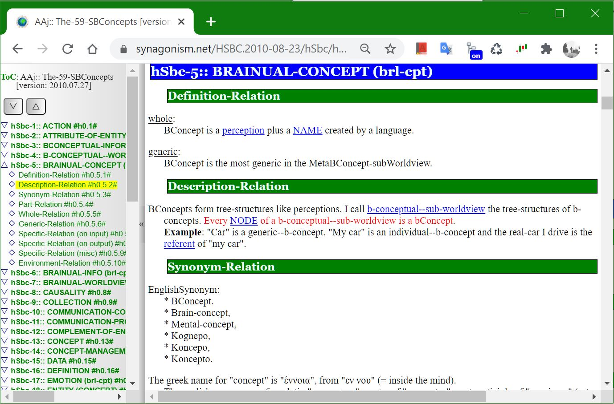
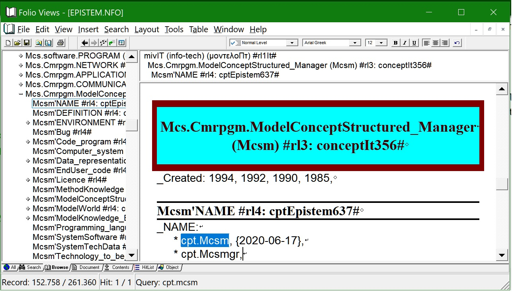

overview of Mcs
description::
· senso-concept (modelConceptSensorial | Mcs) is a-MODEL of a-mind-concept\a\ OUTSIDE of a-human-brain comprised of:
1) a-title: the-main-name of the-concept\a\ and
2) a list of attributes: which are the related concepts of the-concept\a\.
[hmnSngo.2019-12-12]
===
· structured-concept (modelConceptStructured | Mcs) is a-MODEL of a-human-concept\a\ OUTSIDE of a-human-brain comprised of:
1) a-title: the-main-name of the-concept\a\ and
2) a list of attributes: which are the related concepts of the-concept\a\.
[hmnSngo.2017-11-14]
===
· the-goal of structured-concept creation is the-creation of MONOSEMANTIC, consistent, and complete information, readable by humans AND machines.
[hmnSngo.2018-03-05]
name::
* McsEngl.McsCor000002.last.html//dirCor//dirMcs!⇒Mcs,
* McsEngl.dirMcs/dirCor/McsCor000002.last.html!⇒Mcs,
* McsEngl.Mcs!=McsCor000002,
* McsEngl.Mcs!=modelConceptSenso,
* McsEngl.Mcs!=senso-concept,
* McsEngl.Mws'04_sensorial-concept!⇒Mcs,
* McsEngl.Mws'sensorial-concept!⇒Mcs,
* McsEngl.SensoConcept!⇒Mcs, {2025-08-21}
* McsEngl.Scpt!⇒Mcs, {2021-03-26}
* McsEngl.concept.sensorial!⇒Mcs,
* McsEngl.conceptSenso!⇒Mcs,
* McsEngl.conceptSensorial!⇒Mcs,
* McsEngl.cptSenso!⇒Mcs,
* McsEngl.cptSns!⇒Mcs,
* McsEngl.cptSrl!⇒Mcs,
* McsEngl.modelConceptSenso!⇒Mcs, {2021-06-07}
* McsEngl.modelConceptSensorial!⇒Mcs, {2019-08-23}
* McsEngl.senso-concept!⇒Mcs, {2021-06-07}
* McsEngl.senso-mind-concept!⇒Mcs,
* McsEngl.sensoconcept!⇒Mcs, {2021-06-05}
* McsEngl.sensorial-concept!⇒Mcs,
* McsEngl.sensorial--mind-concept!⇒Mcs,
* McsEngl.sensorial-mind-concept!⇒Mcs, {2020-05-09}
====== langoSinago:
* McsSngo.Mes!=Mcs,
* McsSngo.enioSenso!⇒Mes,
* McsSngo.modelo-enio-senso!⇒Mes,
====== langoChinese:
* McsZhon.gǎnguān-gàiniàn-感官概念!=Mcs,
* McsZhon.感官概念-gǎnguān-gàiniàn!=Mcs,
====== langoGreek:
* McsElln.Μεα!=Mcs,
* McsElln.αισθητή-έννοια!⇒Μεα,
* McsElln.δομημένη-έννοια!⇒Μεα,
* McsElln.έννοια.αισθητή!⇒Μεα,
* McsElln.μοντέλο-δομημένης-έννοιας!⇒Μεα,
* McsElln.μοντέλοΕννοιαΑισθητή!⇒Μεα,
====== langoTurkish:
* McsTurk.duyusal-kavram!=Mcs,
=== old-timely:
* McsEngl.model.002-sensorial-concept!⇒Mcs, {2020-08-04}
* McsEngl.model.sensorial-concept!⇒Mcs, {2020-08-04}
* McsEngl.material-brain-concept!⇒Mcs, {2012-04-27}
* McsEngl.modelConceptStructured!⇒Mcs, {2016-08-20}
* McsEngl.CBS!=ConceptBrainualSensorial,
* McsEngl.sensorial-concept!⇒Mcs, {2008-09-12}
* McsEngl.artificial-konsepto!⇒Mcs, {2006-01-29}
* McsEngl.structured-concept!⇒Mcs, {1995-04}
* McsEngl.koncesto!⇒Mcs,
===
* cptBrnSns,
* structured-information,
descriptionLong::
·
title of Mcs
description::
· title-of-Mcs is the-main-name-of-Mcs placed at the-top of its presentation.
"The-title is the-main-name of the-concept."
[hmnSngo.{2017-03-18}]
name::
* McsEngl.Mcs-att.title,
* McsEngl.Mcs'part.title-of-Mcs,
* McsEngl.Mcs'title,
* McsEngl.McsApTitle,
* McsEngl.nameMcs.title,
* McsEngl.title--Mcs-att,
* McsEngl.title-of-Mcs,
name of Mcs
description::
· name of Mcs\a\ is any logo-name of it\a\.
[hmnSngo.2019-08-05]
name::
* McsEngl.Mcs-att.name!⇒nameMcs,
* McsEngl.Mcs-name!⇒nameMcs,
* McsEngl.Mcs'part.name!⇒nameMcs,
* McsEngl.Mcs'attAsName!⇒nameMcs,
* McsEngl.Mcs'attAsPartAsName!⇒nameMcs,
* McsEngl.Mcs'name!⇒nameMcs, {2020-04-30}
* McsEngl.nameMcs,
* McsEngl.name-att--of-Mcs!⇒nameMcs,
* McsEngl.name-of-Mcs!⇒nameMcs,
name-notation of nameMcs
description::
· it is VERY IMPORTANT to be-consistent on the-names we use in order to increase communication.
name::
* McsEngl.Mcs'notation!⇒name-notation,
* McsEngl.name'notation-of-Mcs!⇒name-notation,
* McsEngl.nameMcs'naming-convension!⇒name-notation,
* McsEngl.nameMcs-notation!⇒name-notation,
* McsEngl.nameMcs'notation!⇒name-notation,
* McsEngl.name-notation,
* McsEngl.name-notation--of-Mcs!⇒name-notation,
* McsEngl.naming-convension--of-Mcs!⇒name-notation,
* McsEngl.notation-of--nameMcs!⇒name-notation,
name-notation.2-words-names
description::
· I use 2 words, at least, to name concepts.
· specifics: cellAnimal, cellBone, ...
· attributes: body'neck, body'torso, ...
· this method resolves ambiguities of one-word-names with many meanings and improves the-meaning of texts.
name::
* McsEngl.name-notation.2-words-names,
* McsEngl.2-words-names-notation,
* McsEngl.two-words-names-notation,
name-notation.no-space
description::
· no spaces in multi-word names:
* human-language, Mcs-att,
* use char.45'-' or char.95'_' in programing-languages if '-' is not allowed,
* hyphenate compound-words when the-parts have obvious different concepts: structured-concept, keyboard,
* use more than one hyphen when combine compound-words: decentralized-crypto-chain--protocol,
[hmnSngo.2018-01-22]
name::
* McsEngl.name-notation.no-space,
name-notation.attribute
description::
· denote type of attributes of concepts:
* xxx'yyy or xxxAaYyy: yyy is attribute of xxx,
* xxx'yyy or xxxApYyy: yyy is part of xxx,
* xxx'yyy or xxxAeYyy: yyy is environment of xxx,
* xxx'yyy or xxxAwYyy: yyy is whole of xxx,
* xxx'yyy or xxxAgYyy: yyy is generic of xxx,
* xxx.yyy or xxxAsYyy or xxxYyy: yyy is specific of xxx,
[hmnSngo.2017-11-24, 2019-01-17]
===
* xxx'yyy or xxxAaYyy: yyy is attribute of xxx,
* xxx'pYyy or xxxApYyy: yyy is part of xxx,
* xxx'eYyy or xxxAeYyy: yyy is environment of xxx,
* xxx'wYyy or xxxAwYyy: yyy is whole of xxx,
* xxx'gYyy or xxxAgYyy: yyy is generic of xxx,
* xxx'sYyy or xxxAsYyy or xxxYyy: yyy is specific of xxx,
· this notation is very usefull when we SEARCH for a-concept, where we quickly find ALL related concepts.
· we can-use it in parallel with the-common-names of the-concepts.
name::
* McsEngl.'attribute--name-notation,
* McsEngl.name-notation.'attribute,
* McsEngl.name-notation.attribute('),
name-notation.attribute.part(/)
description::
· a-part-attribute of an-Mcs.
name::
* McsEngl./attribute.part--name-notation,
* McsEngl.name-notation./attribute.part,
* McsEngl.name-notation.attribute.part(/),
* McsEngl.name-notation.part-attribute(/),
* McsEngl.name-notation.whole/part,
name-notation.attribute.whole(//)
description::
· a-whole-attribute of an-Mcs.
name::
* McsEngl.//attribute.whole--name-notation,
* McsEngl.name-notation.//attribute.whole,
* McsEngl.name-notation.attribute.whole(//),
* McsEngl.name-notation.whole-attribute(//),
* McsEngl.name-notation.part//whole,
name-notation.attribute.specific(.)
description::
· a-specific-attribute of an-Mcs.
name::
* McsEngl..attribute.specific--name-notation,
* McsEngl.name-notation..attribute.specific,
* McsEngl.name-notation.attribute.specific(.),
* McsEngl.name-notation.specific-attribute(.),
* McsEngl.name-notation.generic.specific,
name-notation.attribute.generic(:)
description::
· a-generic-attribute of an-Mcs.
name::
* McsEngl.:generic-attribute--name-notation,
* McsEngl.name-notation.:attribute.generic,
* McsEngl.name-notation.attribute.generic(:),
* McsEngl.name-notation.generic-attribute(:),
* McsEngl.name-notation.specific:generic,
name-notation.attribute.parent-child
description::
· parent - child notation.
name::
* McsEngl.;child-attribute--name-notation,
* McsEngl.name-notation.;attribute.child,
* McsEngl.name-notation.attribute.child(;),
* McsEngl.name-notation.child-attribute(;),
* McsEngl.;;parent-attribute--name-notation,
* McsEngl.name-notation.;;attribute.parent,
* McsEngl.name-notation.parent;child,
* McsEngl.name-notation.child;;parent,
name-notation.capital
description::
· WebApi = many words name, first capital.
· lagoSinago = generic-specific name, first small.
[{2024-11-14} hmnSngo]
· first capital:
* initialisms: Hitp, Html,
* many-words: Webapi,
* instance-concepts: Earth, Athens,
* exception: short-names: net, ogn, ogm,
[hmnSngo.2018-01-22]
name::
* McsEngl.name-notation.capital,
name-notation.upper|lower-case
description::
· ONE CASE everywhere:
· sentences begin with char.183'·', so we do-not-need capital-letters in the-beginning of a-sentence.
· exceptions:
* all capitals, for emphasis,
* specifics: xxxYyy,
[hmnSngo.2018-01-14]
name::
* McsEngl.name-notation.lower|upper-case,
* McsEngl.name-notation.upper|lower-case,
name-notation.! extra-info
description::
- McsEll.σύστημα!-το,
- McsEll.καλός!-ός-ή-ό,
· method of inflection:
name::
* McsEngl.! extra-info--name-notation,
* McsEngl.name-notation.! extra-info,
* McsEngl.name-notation.extra-info.!,
name-notation.!~ PoS
description::
- McsElln.ένας!~adjeElln,
name::
* McsEngl.!~ PoS--name-notation,
* McsEngl.name-notation.!~ PoS,
* McsEngl.name-notation.PoS !~,
name-notation.!⇒ main-name
description::
· denotes the-main-name\a\ of a-sensorial-concept.
· AND instructs the-computer to search for it\a\.
name::
* McsEngl.!⇒main-name--name-notation,
* McsEngl.main-name--name-notation-(!⇒),
* McsEngl.name-notation.!⇒main-name,
* McsEngl.name-notation.main-name.!⇒,
name-notation.@ other-worldview
description::
· @ denotes a-name of another worldview.
· !/ previous
· we know / denotes part-of in directories.
· !: previous abandoned because : is-used in name-value-pair.
· !⇨ previous
name::
* McsEngl.@other-worldview--name-notation,
* McsEngl.other-worldview@--name-notation,
* McsEngl.name-notation.@other-worldview,
* McsEngl.name-notation.other-worldview@,
name-notation.!= translation
description::
· denotes translation to English.
name::
* McsEngl.!=translation--name-notation,
* McsEngl.name-notation.!= translation,
* McsEngl.name-notation.translation.!=,
name-notation.{time} (link)
name-notation.[info-resource]
description::
· the-info-resource of an-info.
name::
* McsEngl.name-notation.[info-resource],
* McsEngl.name-notation.left-right-square-brackets,
name-notation.\reference\
description::
· the-reference of a-pronoun.
name::
* McsEngl.name-notation.\reference\,
* McsEngl.name-notation.reverse-solidus,
name-notation.fixed-length
description::
· when a-name has a-length smaller than a-fixed length I want to use,
then, then I add 0000s at the-end to match the-fixed length.
[hmnSngo.{2021-01-05}]
name::
* McsEngl.name-notation.fixed-length,
name-notation.before.2017-11-21
name::
* McsEngl.name-notation.before.2017-11-21,
description::
· NAMES are the-semantic-units of THE-SENTENCES of our texts/speeches.
We create names using WORDS.
In-order-to distinguish names from words I am-using the-following NAME-NOTATION.
Also, in our computer-era, where computers create automatically name-indexes, the-following-notation puts together related concepts.
NAME-OF-CONCEPT with MANY WORDS:
• xxx-yyy
• xxx_yyy
• xxxyyy
example: human-language, human_language, humanlanguage.
This composite-name itself, does not convey any meaning from its sub-names.
Name of A-SPECIFIC-CONCEPT:
• xxx.yyy: the-specifc has as generic the-xxx with attribute the-yyy.
• xxxYyy: same.
example: language.human, languageHuman, Kaseluris.Nikos.1959.
Name of A-CONCEPT'S-ATTRIBUTE:
• xxx's-yyy: yyy is an-attribute of xxx.
• xxx'yyy: same.
example: human's-language, human'language (= language-of-human).
Name of A-PROCESS-CONCEPT:
If a-concept is a-process, I use to name it with an '-ing' ending.
example: doing, evoluting, encrypting, ...
{2013-08-28}
APHORISM:
bad-names bad-thinking, clear-names clear-thinking.
{2013-02-22}
derived-name of nameMcs
description::
· derived-name\b\ of nameMcs\a\ is a-name of an-attribute of the-concept with the-nameMcs\a\, that is-created from it\a\.
· according to Mcs-naming-convension it\b\ begins with the-nameMcs\a\ which is-called 'original-name'.
name::
* McsEngl.derived-name--of--nameMcs,
* McsEngl.nameMcs'derived-name,
* McsEngl.related-name--of--nameMcs,
specific::
* derived--main-name,
original-name of nameMcs
description::
· original-name--of--a-nameMcs\a\ is a-name\b\ of a-concept with attribute the-nameMcs\a\, if name\b\ is a-derived-name of name\a\.
name::
* McsEngl.nameMcs'original-name,
* McsEngl.original-name--of--a-nameMcs,
nameMcs.SPECIFIC
name::
* McsEngl.nameMcs.specific,
* McsEngl.Mcs'attAsNameAsSpecific,
specific::
* dezignator-name,
* dezignatorNo-name,
* main-name,
* title,
===
* English-name,
* EnglishNo-name,
===
* machine-name,
* machineNo-name,
nameMcs.attribute
name::
* McsEngl.nameMcs.attribute,
* McsEngl.attribute-name-of-Mcs,
description::
* English-language:
- concept'attribute. /kónsepts-átribyyut/ {2020-04-30}
- attribute-of-concept.
- conceptual-attribute.
===
* Sinago-language:
- eniosAtro.
- enios-atro.
nameMcs.specific-attribute
name::
* McsEngl.nameMcs.specific-attribute,
* McsEngl.specific-attribute-name-of-Mcs,
description::
* English-language:
- concept.specific.
- conceptSpecific.
- specific-concept.
- specific-of-concept.
===
* Sinago-language:
- enio-specifico.
- enioSpecifico.
nameMcs.dezignator
description::
· dezignator of Mcs\a\ is a-name we use to refer to concept\a\ itself and not to one of its semo-concepts.
· its generic noun usually it is-used as dezignator.
[hmnSngo.2019-08-05]
name::
* McsEngl.Mcs'dezignator!⇒dezignatorMcs,
* McsEngl.dezignatorMcs,
* McsEngl.dezignator-of-Mcs!⇒dezignatorMcs,
* McsEngl.mindNameMcs!⇒dezignatorMcs, {2022-08-17}
* McsEngl.nameMcsMind!⇒dezignatorMcs, {2020-07-10}
* McsEngl.nameMcs.mind!⇒dezignatorMcs,
====== langoGreek:
* McsElln.δηλωτής!=dezignatorMcs,
specific::
* ID,
* main-name,
* title,
dezignator.main
description::
· a-Mcs can-have many dezignators.
· main-name is its most used term dezignator.
· the related names of the-concept (part, specific) are created from the-main-name.
name::
* McsEngl.dezignatorMcs.main!⇒nameMcsMain,
* McsEngl.Mcs'attAsNameAsMain!⇒nameMcsMain,
* McsEngl.Mcs'main-name!⇒nameMcsMain,
* McsEngl.Mcs-main-name!⇒nameMcsMain, {2019-03-10}
* McsEngl.main-nameMcs!⇒nameMcsMain,
* McsEngl.main-name--of-Mcs!⇒nameMcsMain,
* McsEngl.nameMcsMain,
* McsEngl.nameMcs.main!⇒nameMcsMain,
derived-name of main-name
description::
· derived-name--of--Mcs-main-name\a\ is a-derived-name of it\a\
name::
* McsEngl.derived-name--of--Mcs-main-name,
* McsEngl.nameMcs.main'derived-name,
* McsEngl.nameMcsMain'derived-name,
* McsEngl.related-name--of--Mcs-main-name,
dezignator.mainNo
description::
· mainNo-dezignator of Mcs is any dezignator other than the-main-name.
· the-mainNo-dezignators, in the-list of names, present and the-main-name in the-form: * Mcs.mainNo-name!⇒main-name,
· this way the-derived-names of a-name\a\ are-stored once with only the-main-name of the-name\a\.
name::
* McsEngl.mainNo-dezignator--nameMcs,
* McsEngl.dezignatorMcs.mainNo,
dezignator.synonyms
description::
· synonyms of Mcs\a\ is the-set of all dezignators of Mcs\a\
name::
* McsEngl.dezignatorMcs.synonyms,
dezignator.conceptary
description::
· conceptary of worldview is the-set of all dezignators in one language.
· the-conceptary does-not-contain the-parts-of-speech that denote semo-concepts of a-concept.
name::
* McsEngl.dezigneptary-of-worldview, from 'dictionary'
* McsEngl.conceptary-of-worldview, from 'dictionary'
====== langoGreek:
* McsElln.εννοιολόγιο!=conceptary, από 'λεξιλόγιο',
* McsElln.δηλοτολόγιο!=conceptary, από 'λεξιλόγιο',
environment::
* wordary,
* namary,
nameMcs.individual
description::
· genericNo-name of Mcs is any genericNo-logo-name of it.
name::
* McsEngl.nameMcs.element,
* McsEngl.nameMcs.genericNo,
* McsEngl.nameMcs.individual,
* McsEngl.nameMcs.instance,
* McsEngl.nameMcs-element,
* McsEngl.nameMcs-instance,
* McsEngl.nameMcs, {2019-02-11}
* McsEngl.genericNo-name--of-Mcs,
* McsEngl.name-element--of-Mcs,
* McsEngl.name-instance--Mcs-att,
* McsEngl.nameMcs,
* nameMcs, {2019-03-02}
nameMcs.English
description::
· a-English-nameMcs has:
* title: 'name::' and
* list-elements: '* McsEngl.name' (old: '* Mcs.name')
name::
* McsEngl.English--nameMcs,
* McsEngl.nameMcs.English,
nameMcs.EnglishNo
description::
· a-non-English-nameMcs has:
* title: 'name::' and
* a-subtitle: '====== langoName:' and
* list-elements: '* McsLag4.name', where Lag4 a-4-letter language-name,
=== old:
* title: 'name.Language::' and
* list-elements: '* McsLag.name', where Lag is the-3-letter-terminology-ISO-639-2-language-code,
name::
* McsEngl.nameMcs.EnglishNo,
* McsEngl.non-English--nameMcs,
====== langoGreek:
* McsElln.μη-Αγγλικό-όνομα-αισθητής-έννοιας,
nameMcs.machine
description::
· formal--nameMcs is an-nameMcs used most by machines.
· for example, "nameMcsAsFormal".
· 1) machine-names begin with capitals: "Dtc-Net".
· 2) initializations have only first capital: "Html, Dbcnet".
name::
* McsEngl.formal--nameMcs,
* McsEngl.machine--nameMcs,
* McsEngl.nameMcs.formal,
* McsEngl.nameMcs.machine,
* McsEngl.Mcs'attAsNameAsFormal,
* McsEngl.Mcs'attAsNameAsMachine,
nameMcs.machineNo
description::
· formalNo--nameMcs is an-nameMcs used most by humans.
· for example, "non-formal-nameMcs".
name::
* McsEngl.formalNo--nameMcs,
* McsEngl.machineNo--nameMcs,
* McsEngl.nameMcs.formalNo,
* McsEngl.nameMcs.machineNo,
* McsEngl.Mcs'attAsNameAsFormalNo,
* McsEngl.Mcs'attAsNameAsMachineNo,
nameMcs.dictionary
description::
· in literature there-is a-confusion and different understandings among the-concepts:
* wordary,
* namary,
* termary,
* conceptary,
· that is why we see indexes of words instead of names.
· also we see vicious-circle-definitions of nouns and verbs of the-SAME concept.
name::
* McsEngl.dictionary@literature,
* McsEngl.glossary@literature,
* McsEngl.lexicon@literature,
* McsEngl.terminology@literature,
* McsEngl.vocabulary@literature,
attribute of Mcs
description::
· attribute-of-Mcs\a\ is one or more Mcs\b\ related with Mcs\a\.
[hmnSngo.2019-03-10]
name::
* McsEngl.Mcs'attribute!⇒Mcs-att,
* McsEngl.Mcs'att!⇒Mcs-att,
* McsEngl.Mcs'characteristic!⇒Mcs-att,
* McsEngl.Mcs'trait!⇒Mcs-att,
* McsEngl.Mcs-att,
* McsEngl.McsAaAttribute!⇒Mcs-att,
* McsEngl.attribute-of-Mcs!⇒Mcs-att,
* McsEngl.characteristic-of-Mcs!⇒Mcs-att,
* McsEngl.feature-of-Mcs!⇒Mcs-att,
* McsEngl.value/!RDF!⇒Mcs-att,
====== langoSinago:
* McsSngo.atro-a-Mes!=attribute-of-Mcs, {2019-10-20}
* McsSngo.enioSensosAtro, {2019-10-24}
====== langoGreek:
* McsElln.χαρακτηριστικό-Μεα!=attribute-of-Mcs,
attribute-relation of Mcs
description::
· attribute-relation is the-relation between a-concept\a\ and an-attribute of it\a\.
=== implied yǒu-有!~verbZhon!=rlnAttribute-of-Mcs:
· _stxZhon: 我 头疼。 :: _stxSbj:[Wǒ] _stxSbjc:[tóuténg]. != I have a headache.
· _stxZhon: 我 就 一 个 哥哥 。 :: _stxSbj:[Wǒ] _stxIndividuality:[jiù] _stxSbjc:[yī gè gēge]. != I only have one brother.
name::
* McsEngl.Mcs'attribute-relation,
* McsEngl.Mcs-att'attribute-relation,
* McsEngl.attribute-relation--of-Mcs,
* McsEngl.relation.attribute-of-Mcs,
* McsEngl.being-rlnAttribute-of-Mcs,
* McsEngl.having-rlnAttribute-of-Mcs,
* McsEngl.rlnAttribute-of-Mcs,
* McsEngl.of!~conjEngl!=rlnAttribute-of-Mcs,
* McsEngl.property@RDF!⇒Mcs'attribute-relation,
* McsEngl.verb.be!~verbEnglC!=rlnAttribute-of-Mcs,
* McsEngl.verb.have!~verbEnglC!=rlnAttribute-of-Mcs,
====== langoSinago:
* McsSngo.rao-atro!=rlnAttribute-of-Mcs,
* McsSngo.conjSngo.a!=rlnAttribute-of-Mcs,
* McsSngo.a!~conjSngo!=rlnAttribute-of-Mcs,
====== langoChinese:
* McsZhon.dòngcí.yǒu-有!=rlnAttribute-of-Mcs,
* McsZhon.yǒu-有!~verbZhon!=rlnAttribute-of-Mcs,
* McsZhon.有-yǒu!~verbZhon!=rlnAttribute-of-Mcs,
====== langoGreek:
* McsElln.σχέση-χαρακτηριστικού-Μεα,
attribute.SPECIFIC
specific::
=== alphabetically:
* author-att,
* complement-of-att,
* definition-att,
* description-att,
* dichotomous-division--att,
* division-att,
* doing-att,
* doingNo-att,
* environment-att,
* evaluation-att,
* evoluting-att,
* generic-att,
* generic-chain--att,
* inherited-from-att,
* inherited-fromNo-att,
* inherited-to-att,
* inherited-toNo-att,
* name-att,
* part-att,
* partNo-att,
* part-division--att,
* specific-att,
* specific-chain--att,
* specifics-division--att,
* supporter-att,
* title-att,
* whole-att,
* whole-chain--att,
* wholeNo-att,
attribute.specs-div.internal|external
description::
* part-att,
* partNo-att,
name::
* McsEngl.Mcs-att.spec-div.part-instance,
attribute.specs-div.doing-instance
description::
· on doing:
* doing-att,
* doingNo-att,
name::
* McsEngl.Mcs-att.spec-div.doing-instance,
attribute.specs-div.inherited-to
description::
· this division has NO meaning, because ALL att of a-generic inherited to a-specific.
· the-specific is the-one that has EXTRA att.
[hmnSngo.2020-01-11]
===
· on inherited-to:
* inherited-to-att,
* inherited-toNo-att,
name::
* McsEngl.Mcs-att.spec-div.inherited-to-instance,
attribute.division
description::
· division--of--Mcs-attributes\a\-(part, partNo, specific, all-attributes) is the-SET of attributes of the-Mcs that make-up the-attributes\a\ divided on ONE attribute.
· there-are no overlappings and no holes in the-attributes of the-division.
· the-attributes of one-concept can-have many divisions.
name::
* McsEngl.Mcs-att.division!⇒Mcs-division,
* McsEngl.Mcs'attAsDivision!⇒Mcs-division,
* McsEngl.Mcs'division-attribute!⇒Mcs-division,
* McsEngl.Mcs-division,
* McsEngl.division--of--Mcs-atts!⇒Mcs-division,
complement-of-att of Mcs-division
description::
· in ONE division all the-other attributes of an-attribute\a\ is the-complement of attribute\a\ ON this division.
name::
* McsEngl.Mcs-att'complement!⇒Mcs-complement,
* McsEngl.Mcs'complement-of-att!⇒Mcs-complement,
* McsEngl.Mcs-att.complement-of-att!⇒Mcs-complement,
* McsEngl.Mcs-complement,
* McsEngl.complement!⇒Mcs-complement,
* McsEngl.complement-of--Mcs-att!⇒Mcs-complement,
====== langoSinago:
* McsSngo.uo!=complement-of-att,
====== langoGreek:
* McsElln.επίθετο.συμπληρωματικός!=Mcs-complement,
* McsElln.συμπληρωματικός!~adjeElln!=Mcs-complement,
====== langoTurkish:
* McsTurk.tamamlayıcı!=Mcs-complement,
Mcs-complement.SPECIFIC in division
description::
* attributes-complement,
* parts-complement,
* specifics-complement,
name::
* McsEngl.Mcs-complement.specific,
Mcs-complement.attributes in division
description::
· attributes-complement of Mcs-att is a-complement that makes-up all the-attributes of the-Mcs.
name::
* McsEngl.Mcs-complement.attributes,
* McsEngl.attributes-complement--of-Mcs,
* McsEngl.attributes-complement--of-Mcs,
* McsEngl.complement.attributes--of-Mcs,
====== langoSinago:
* McsSngo.uatro-a-Mes!=complement.attributes,
* McsSngo.uo-atro-a-Mes!=complement.attributes,
Mcs-complement.parts in division
description::
· parts-complement of att\a\ in a-division is the-complement-of-att\a\ in a-part-division.
name::
* McsEngl.Mcs'parts-complement--of-att,
* McsEngl.Mcs-complement.parts,
* McsEngl.Mcs'parts-complement,
* McsEngl.complement.parts--of-Mcs,
* McsEngl.parts-complement--of-Mcs,
====== langoSinago:
* McsSngo.ujo-a-Mes!=complement.parts,
* McsSngo.uo-jo-a-Mes!=complement.parts,
Mcs-complement.specifics in division
description::
· specific-complement-of-att\a\ IN a-specifics-division-of-a-Mcs\b\ is the-complement-of-att\a\ in the-specifics-division\b\.
· example:
· the-sysMolecules has a-specifics-division: pure, pureNo.
· the-specific-complement-of-pure is the-pureNo.
name::
* McsEngl.Mcs'specifics-complement--of-att,
* McsEngl.Mcs-complement.specifics,
* McsEngl.Mcs-specifics-complement,
* McsEngl.complement.specifics--of-Mcs,
* McsEngl.specific-complement--of-Mcs,
* McsEngl.specifics-complement--of-Mcs,
====== langoSinago:
* McsSngo.ugo-a-Mes!=complement.specifics,
* McsSngo.uo-go-a-Mes!=complement.specifics,
Mcs-division.dichotomous
description::
· dichotomous-division is a-division with 2 members, the-one that has the-attribute and the-other that has not.
· it is the-simplest and clearest one.
name::
* McsEngl.Mcs-att.dichotomous-division,
* McsEngl.Mcs-att.division.dichotomous,
* McsEngl.Mcs'attAsDichotomous-division,
* McsEngl.Mcs'dichotomous-division-attribute,
* McsEngl.Mcs-division.dichotomous,
* McsEngl.dichotomous-division--Mcs-att,
* McsEngl.division.dichotomous--Mcs-att,
====== langoGreek:
* McsElln.διχοτομική-διαίρεση!=dichotomous-division--Mcs-att,
Mcs-division.trichotomous
description::
· like a-dichotomous-division we have clear division in 3 entities:
· past, present, future,
· male, maleNo-(female), maleBo-(both male and female).
[hmnSngo.2019-07-19]
name::
* McsEngl.Mcs-division.trihotomous,
* McsEngl.trihotomous-division--of-Mcs,
====== langoGreek:
* McsElln.τριχοτομική-διαίρεση!=trichotomous-division--Mcs-att,
specific::
* ordered--trichotomous-division,
* orderedNo-trichotomous-division,
first-att of ordered--trichotomous-division
description::
·
name::
* McsEngl.trichotomous-division'first-attribute,
====== langoSinago:
* McsSngo.atro-mido-anto,
middle-att of ordered--trichotomous-division
description::
·
name::
* McsEngl.middle-att--of--trichotomous-division,
* McsEngl.trichotomous-division'middle-attribute,
====== langoSinago:
* McsSngo.atro-mido,
third-att of ordered--trichotomous-division
description::
·
name::
* McsEngl.trichotomous-division'third-attribute,
====== langoSinago:
* McsSngo.atro-mido-afto,
Mcs-division.attributes
description::
· attributes-division of Mcs\a\ is a-division of its\a\ attributes.
name::
* McsEngl.attributes-division-of-Mcs,
Mcs-division.doing
description::
· doing-division--Mcs-att is a-dichotomous-division of a-Mcs's attributes in doing and doingNo.
name::
* McsEngl.division.doing--Mcs-att,
* McsEngl.Mcs-att.division.doing,
* McsEngl.Mcs-division.doing,
Mcs-division.part-attributes
description::
· parts-division--Mcs-att is a-division of a-Mcs's parts.
name::
* McsEngl.Mcs-division.parts,
* McsEngl.Mcs-att.division.parts,
* McsEngl.Mcs-division.parts,
attribute.part (internal)
description::
· part-att of Mcs\a\ is an-att we perceive as internal|intrinsic.
name::
* McsEngl.externalNo--Mcs-att!⇒Mcs'part,
* McsEngl.internal--Mcs-att!⇒Mcs'part,
* McsEngl.intrinsic--Mcs-att!⇒Mcs'part,
* McsEngl.Mcs'externalNo-attribute!⇒Mcs'part,
* McsEngl.Mcs'internal-attribute!⇒Mcs'part,
* McsEngl.Mcs'attAsExternalNo!⇒Mcs'part,
* McsEngl.Mcs'attAsInternal!⇒Mcs'part,
* McsEngl.Mcs'attAsPart!⇒Mcs'part,
* McsEngl.Mcs'part,
* McsEngl.Mcs-att.externalNo!⇒Mcs'part,
* McsEngl.Mcs-att.internal!⇒Mcs'part,
* McsEngl.Mcs-att.part!⇒Mcs'part,
* McsEngl.Mcs-part-att!⇒Mcs'part, {2019-04-08}
* McsEngl.part--Mcs-att!⇒Mcs'part,
====== langoSinago:
* McsSngo.atro-jo-a-Mes!=Mcs'part,
part-relation
description::
· part-relation of Mcs\a\ is the-relation between the-Mcs\a\ and a-part of it\a\.
name::
* McsEngl.Mcs'part-relation,
* McsEngl.part-relation--of-Mcs,
* McsEngl.relation.part--of-Mcs,
* McsEngl.rlnPart,
====== langoSinago:
* McsSngo.conjSngo.ja!=rlnPart,
* McsSngo.ja!~conjSngo!=rlnPart,
* McsSngo.rao-jo!=rlnPart, {2023-07-21}
part.SPECIFIC
description::
* part-list--part-att,
* part-instance--part-att,
* title--part-att,
* overview--part-att,
* description--part-att,
* name--part-att,
* definition--part-att,
* part-division--part-att,
name::
* McsEngl.Mcs'part.specific,
part.list
description::
· part-list-att of Mcs is a-set of part-att.
name::
* McsEngl.Mcs'part.list,
* McsEngl.part-list-att--of-Mcs,
part.instance
description::
· part-instance--Mcs\a\-att is a-genericNo part-attribute.
name::
* McsEngl.Mcs-att.part-instance,
* McsEngl.Mcs'part.instance,
* McsEngl.part-instance--Mcs-att,
part.overview
description::
· overview-of-Mcs is a-part-attribute which contains the-description and the-name attributes.
[hmnSngo.2018-11-03]
name::
* McsEngl.Mcs'part.overview,
* McsEngl.Mcs-att.overview,
* McsEngl.overview-of-Mcs,
part.description
description::
· description--Mcs-att is Mcs-TEXT that IDENTIFIES a-Mcs.
· a-definition UNIQUELY IDENTIFIES a-Mcs.
[hmnSngo.2017-12-22]
name::
* McsEngl.description--Mcs-att,
* McsEngl.Mcs-att.description,
* McsEngl.Mcs'part.description,
* McsEngl.Mcs'attAsDescription,
* McsEngl.Mcs'description-attribute,
part.definition
description::
· our knowledge is-structured in 3 fundamental structures: the-whole-part-tree and the-generic-specific-tree and the-evolutionary-tree.
· every Mcs must-have 6 definitions: generic, specific, whole, part, parent, child.
[hmnSngo.{2023-04-12}]
===
· definition-att of Mcs is Mcs-TEXT that UNIQUELY IDENTIFY a-Mcs in the shortest way.
· a-Mcs has more than one definition because our knowledge is-structured at least in two fundamental structures: the-whole-part-tree and the-generic-specific-tree.
· every Mcs must-have 4 definitions: generic, specific, whole, part.
· description is TEXT that IDENTIFY a-Mcs.
· a-definition is formal if it is readable and by machines.
name::
* McsEngl.Mcs-att.definition!⇒definitionMcs,
* McsEngl.Mcs'part.definition!⇒definitionMcs,
* McsEngl.Mcs'attAsDefinition!⇒definitionMcs,
* McsEngl.definitionMcs,
* McsEngl.definition--Mcs-att!⇒definitionMcs,
* McsEngl.definition-att-of-Mcs!⇒definitionMcs,
* McsEngl.definition-of-Mcs!⇒definitionMcs,
* McsEngl.dfn-of-Mcs!⇒definitionMcs,
====== langoChinese:
* McsZhon.dìngyì-定义-(定義)!=definitionMcs,
* McsZhon.定义-(定義)-dìngyì!=definitionMcs,
====== langoGreek:
* McsElln.ορισμός!ο!=definitionMcs,
definitionMcs.generic
description::
· generic-definition is a-definition FROM a-specific-concept.
· creates a-generic-concept.
name::
* McsEngl.definitionMcs.generic,
* McsEngl.generic-definitionMcs,
definitionMcs.specific
description::
· specific-definition is a-definition FROM a-generic-concept.
· creates a-specific-concept.
name::
* McsEngl.definitionMcs.specific,
* McsEngl.specific-definitionMcs,
definitionMcs.whole
description::
· whole-definition is a-definition FROM part-concepts.
· creates a-whole-concept.
name::
* McsEngl.definitionMcs.whole,
* McsEngl.whole-definitionMcs,
definitionMcs.part
description::
· part-definition is a-definition FROM a-whole-concept.
· creates a-part-concept.
name::
* McsEngl.definitionMcs.part,
* McsEngl.part-definitionMcs,
definitionMcs.parent
description::
· creates a-parent-concept in the-evolutionary-tree.
name::
* McsEngl.definitionMcs.parent,
* McsEngl.parent-definitionMcs,
definitionMcs.child
description::
· creates a-child-concept in the-evolutionary-tree.
name::
* McsEngl.child-definitionMcs,
* McsEngl.definitionMcs.child,
definitionMcs.analytic
description::
· analytic-definition is any specific or part definition.
name::
* McsEngl.analytic-definition,
* McsEngl.definitionMcs.analytic,
definitionMcs.synthetic
description::
· synthetic-definition is any generic or whole definitions.
name::
* McsEngl.definitionMcs.synthetic,
* McsEngl.synthetic-definitionMcs,
part.part-division
description::
· part-division--Mcs-att is a-division of the-part-attributes.
name::
* McsEngl.division.part--Mcs-att,
* McsEngl.Mcs'division.part,
* McsEngl.Mcs'part.part-division,
* McsEngl.Mcs-att.part-division,
* McsEngl.Mcs'attAsPartial-division,
* McsEngl.part-division--Mcs-att,
* McsEngl.partial-division--Mcs-att,
attribute.partNo
description::
· partNo--Mcs-att is the-complement of part-attribute.
name::
* McsEngl.Mcs'attAsExternal!⇒Mcs'partNo,
* McsEngl.Mcs'attAsInternalNo!⇒Mcs'partNo,
* McsEngl.Mcs'attAsPartNo!⇒Mcs'partNo,
* McsEngl.Mcs'external-attribute!⇒Mcs'partNo,
* McsEngl.Mcs'internalNo-attribute!⇒Mcs'partNo,
* McsEngl.Mcs-att.external!⇒Mcs'partNo,
* McsEngl.Mcs-att.internalNo!⇒Mcs'partNo,
* McsEngl.Mcs-att.partNo!⇒Mcs'partNo,
* McsEngl.Mcs'partNo, {2020-08-30}
* McsEngl.external--Mcs-att!⇒Mcs'partNo,
* McsEngl.extrinsic--Mcs-att!⇒Mcs'partNo,
* McsEngl.intrinsicNo--Mcs-att!⇒Mcs'partNo,
* McsEngl.partNo--Mcs-att!⇒Mcs'partNo,
* environment--Mcs-att!⇒Mcs'partNo, {2019-03-09}
====== langoSinago:
* McsSngo.atro-joUgo-a-Mes!=partNo-att--of-Mcs,
attribute.whole-part--tree (link)
attribute.whole
description::
· whole-att of Mcs\a\ is another Mcs\b\ which has as part the-Mcs\a\.
name::
* McsEngl.Mcs-att.partNo.whole!⇒Mcs-whole,
* McsEngl.Mcs-att.whole!⇒Mcs-whole,
* McsEngl.Mcs'attAsWhole!⇒Mcs-whole,
* McsEngl.whole--Mcs-att, {2019-03-09}
* McsEngl.whole-of-Mcs,
====== langoSinago:
* McsSngo.atro-co-a-Mes!=whole-att--of-Mcs,
attribute.whole-chain
description::
· whole-chain of Mcs\a\ is the-chain of whole-concepts of Mcs\a\ from parent-whole to most-whole-concept.
name::
* McsEngl.Mcs-att.whole-chain,
* McsEngl.Mcs'attAsWhole-chain,
* McsEngl.whole-chain--Mcs-att,
attribute.wholeNo
description::
· wholeNo--Mcs-att is a-partNo-att which is not whole of this Mcs.
· a-wholeNo, partNo attribute.
name::
* McsEngl.Mcs'attAsWholeNo!⇒Mcs'envt,
* McsEngl.Mcs'envt,
* McsEngl.Mcs-att.partNo.wholeNo!⇒Mcs'envt,
* McsEngl.Mcs-att.wholeNo!⇒Mcs'envt,
* McsEngl.environment--Mcs-att!⇒Mcs'envt,
* McsEngl.partNo.wholeNo--Mcs-att!⇒Mcs'envt,
* McsEngl.wholeNo.partNo--Mcs-att!⇒Mcs'envt,
====== langoSinago:
* McsSngo.atro-coUgo-a-Mes!=!⇒Mcs'envt,
attribute.wholeNo.SPECIFIC
specific::
* author-of-Mcs,
* evaluation-of-Mcs,
* referent-of-Mcs,
* supporter-of-Mcs,
attribute.wholeNo.archetype
description::
· a-concept is a-brainin-model of entities\a\.
· a-structured-concept is a-computer-model of a-concept.
· archetype-of-a-structured-concept is the-set of entities\a\.
[hmnSngo.2018-01-07]
===
· referent-of-Mcs is the-entity that the-Mcs models.
· every concept models an-entity (its referent).
· the-referent of a-concept\a\ and the-referent of the-Mcs that models that concept\a\ are the-same.
name::
* McsEngl.Mcs'archetype,
* McsEngl.Mcs-att.archetype,
* McsEngl.Mcs-att.referent,
* McsEngl.Mcs'attAsArchetype,
* McsEngl.Mcs'referent,
* McsEngl.archetype--Mcs-att,
* McsEngl.referent--Mcs-att,
whole-chain::
* environment--Mcs-att,
generic-tree::
* Mcs-att,
attribute.wholeNo.evaluation
description::
· evaluation--Mcs-att is the-cons and pros of the-Mcs.
name::
* McsEngl.evaluation--Mcs-att,
* McsEngl.Mcs-att.evaluation,
* McsEngl.Mcs-att.wholeNo.evaluation,
attribute.wholeNo.supporter
description::
· supporter-of-Mcs is the-entity (human, group of humans, machine) that consider this Mcs as true.
name::
* McsEngl.Mcs-att.holder,
* McsEngl.Mcs-att.supporter,
* McsEngl.Mcs'supporter,
* McsEngl.supporter-of-Mcs,
attribute.author
description::
· author is the-supporter who created the-Mcs.
name::
* McsEngl.author-of-Mcs,
* McsEngl.Mcs'author,
* McsEngl.Mcs'creator,
attribute.doing
description::
· doing--Mcs-att is LISTS of a-Mcs-att which are doings|processes.
name::
* McsEngl.doing--Mcs-att,
* McsEngl.Mcs-att.doing,
attribute.evoluting
description::
· evoluting--Mcs-att is the-attribute that describes the-Mcs over time, its stages.
· evoluting comprises the-evoluting of the-Mcs itself and the-evoluting of its referent.
· everything is-born and die.
· evoluting is a-doing-attribute, not a-specific one because specifics behave like the-evolution of their generic.
name::
* McsEngl.evoluting--Mcs-att,
* McsEngl.Mcs-att.evoluting,
* McsEngl.Mcs-att.specific.evoluting,
attribute.doingNo
description::
· doingNo--Mcs-att is the-complement doing-att.
name::
* McsEngl.doingNo--Mcs-att,
* McsEngl.Mcs-att.doingNo,
attribute.generic-specific--tree (link)
attribute.generic
description::
· generic-att of Mcs\a\ is another Mcs\b\ whose\b\ all attributes are and attributes of Mcs\a\ but not the-opposite.
· the-Mcs\a\ is a-specific-of-Mcs\b\.
· the-referent of a-generic-of-Mcs is a-superset of the-referent-of-Mcs.
name::
* McsEngl.generic-att--of-Mcs,
* McsEngl.generic-of-Mcs,
* McsEngl.Mcs-att.generic,
* McsEngl.Mcs'attAsGeneric-attribute,
* McsEngl.Mcs'generic-attribute,
====== langoSinago:
* McsSngo.atro-ko-a-Mes!=generic-att--of-Mcs,
attribute.generic-chain
description::
· generic-chain of Mcs\a\ is the-chain of generic-concepts of Mcs\a\ from parent-generic to most-generic-concept.
name::
* McsEngl.generic-chain--Mcs-att,
* McsEngl.Mcs-att.generic-chain,
* McsEngl.Mcs'attAsGeneric-chain,
generic-tree::
* tree-node--path,
attribute.specific
description::
· specific-att of Mcs\a\ is another Mcs\b\ if all the-attributes of Mcs\a\ are and attributes of Mcs\b\ and not the-opposite.
· the-Mcs\a\ is a-generic-of-Mcs\b\.
· also, the-referent of a-specific is a-subset of the-referent of its generic.
name::
* McsEngl.Mcs-att.specific,
* McsEngl.Mcs'attAsSpecific,
* McsEngl.specific--Mcs-att,
* McsEngl.specific-att-of-Mcs,
* McsEngl.specific-of-Mcs,
====== langoSinago:
* McsSngo.atro-koUanto-a-Mes!=specific-att--of-Mcs,
attribute.individual
description::
· individual-att of Mcs is a-specific-of-Mcs which has no other specifics.
name::
* McsEngl.Mcs-att.individual,
* McsEngl.individual-att--of-Mcs,
* McsEngl.individual-of-Mcs,
* McsEngl.instance-of-Mcs,
====== langoSinago:
* McsSngo.atro-koUgo-a-Mes!=individual-att--of-Mcs,
attribute.specifics-division
description::
Specifics-division-of-Mcs\a\ is the-set of specific-concepts of Mcs\a\ on THE-SAME-ATTRIBUTE.
A-generic-concept can-have MANY specifics-divisions on DIFFERENT attributes.
For example, humans on 'tallness' are tall and tallNo.
The same humans on 'fatness' are fat and fatNo.
But it is a-mistake to say that humans are tall, tallNo and fat.
And this is the most common mistake in scientific-knowledge!
[hmnSngo.2017-11-15]
name::
* McsEngl.Mcs-att.division.specifics,
* McsEngl.Mcs-att.specifics-division,
* McsEngl.Mcs-division.specifics,
* McsEngl.Mcs'attAsSpecifics-division,
* McsEngl.division.specifics--Mcs-att,
* McsEngl.sd!=specifics-division--Mcs-att, {2022-08-28}
* McsEngl.specific-division--Mcs-att,
* McsEngl.specifics-division!=specs-div,
* McsEngl.specs-div!=specifics-division,
* McsEngl.specs-division--Mcs-att,
====== langoGreek:
* McsElln.διαίρεση-ειδικών-εννοιών,
generic-tree::
* generic-tree,
attribute.inherited-from
description::
Inheritedfrom--Mcs\a\-att is an-attribute-of-Mcs\a\ which is AND attribute of a-generic-concept of it\a\.
name::
* McsEngl.inherited-from--Mcs-att,
* McsEngl.Mcs-att.inherited-from,
* McsEngl.Mcs'attAsInherited-from,
* McsEngl.Mcs'inherited-from--attribute,
attribute.inherited-from.no
description::
InheritedfromNo--Mcs\a\-att is an-attribute-of-Mcs\a\ which is NOT AND attribute of a-generic-concept of it\a\.
name::
* McsEngl.inherited-fromNo--Mcs-att,
* McsEngl.Mcs-att.inherited-fromNo,
* McsEngl.Mcs-att.own,
* McsEngl.Mcs'attAsInherited-fromNo,
attribute.inherited-to
description::
Inheritedto--Mcs\a\-att is an-attribute-of-Mcs\a\ which is AND attribute of a-specific-concept of it\a\.
name::
* McsEngl.inherited-to--Mcs-att,
* McsEngl.Mcs-att.inherited-to,
* McsEngl.Mcs'attAsInherited-to,
attribute.inherited-to.no
description::
InheritedtoNo--Mcs\a\-att is an-attribute-of-Mcs\a\ which is NOT AND attribute of a-specific-concept of it\a\.
name::
* McsEngl.inherited-toNo--Mcs-att,
* McsEngl.Mcs-att.inherited-toNo,
* McsEngl.Mcs'attAsInherited-toNo,
* McsEngl.Mcs'inherited-toNo--attribute,
text of Mcs
description::
· Mcs-text is TEXT comprised of nameMcs.
· it uses the-nameMcs-notation.
· the-goal of Mcs-text is to be MONOSEMANTIC by defining ALL the-names it uses, LIKE computer-language-texts.
[hmnSngo.2018-10-14]
===
· the-second goal is the-manager to understands the-text and display it in any language.
· monosemanticity is a-prerequisite for that.
· lagSinago could-be-used for that.
[hmnSngo.{2021-03-18}]
name::
* McsEngl.Mcs'text!⇒Mcs-text,
* McsEngl.Mcs-text, {2019-05-22}
* McsEngl.sensorial-concept--text!⇒Mcs-text,
* McsEngl.text-of-Mcs!⇒Mcs-text,
time of Mcs
description::
· time info is enclosed in {}.
=== time-point:
* {2005}
* {0005}
* {Bce0005}
* {Bce9999}
* {BpK1x010} => 10'000 years ago, after Bce9999 use only Bp,
* {BpK1x012} => 12'000 years ago,
* {BpK1x033} => 33'000 years ago,
* {BpK2x033} => 33 million years ago,
* {BpK3x033} => 33 billion years ago,
=== time-interval:
* {i2005..2010}
* {iBce0010..Bce0005}
* {iBpK1x033..BpK1x003}
* {i0...} => interval larger that millennium
* {i1m-2000} => interval-1m time-info: MILLENNIUM events {1001..2000}
* {i11-2000} => interval-11 time-info: early-millennium events,
* {i12-2000} => interval-12 time-info: middle-millennium events,
* {i13-2000} => interval-13 time-info: late-millennium events,
* {i1m-Bce2000} => interval-1m time-info: MILLENNIUM events {Bce1001..Bce2000}
* {i2c-2000} => interval-2c time-info: CENTURY {1901..2000}
* {i21-2000} => interval-21 time-info: early-century,
* {i3d-2000} => interval-3d time-info: DECADE {1991..2000}
* {i4y-2000} => interval-4y time-info: YEAR,
=== time-on-subject:
* {socEus-2000} => Eu time-info (uses main-name),
* {socEus-i2000..2060} => Eu time-info (uses main-name),
* {socEus-ic-2000} => Eu time-info (uses main-name),
===
name::
* McsEngl.Mcs'time,
* McsEngl.time.Mcs,
view of Mcs
description::
· Mcs-view is a-sensorial-concept-Mcs which is a-system of sensorial-concepts that we communicate.
---
· a-mind-view\a\ is a-brain construct that\a\ we do-not-know yet how exactly it is-formed.
· but we can-make a-sensorial model of it\a\, comprised of sensorial-concepts.
· in this site, these sensorial-concepts I am-using, I call sensorial-concepts-Mcs and the-sensorial mind-view, Mcs-view\b\.
· this\b\ sensorial view is the-input of language-mapping-method and anybody can-see.
· also this\b\ sensorial view is what anyone can-get if they decode correctly the-logo-view.
---
name::
* McsEngl.Mcs'view!⇒McsView,
* McsEngl.Mcs'conceptual-model!⇒McsView,
* McsEngl.McsAwView!⇒McsView,
* McsEngl.Mcsvw!⇒McsView, {2020-07-06}
* McsEngl.Mcsvw!=Mcs-view,
* McsEngl.McsView,
* McsEngl.Mcs-subworldview!⇒McsView,
* McsEngl.Mcs-view!⇒McsView, {2019-05-22}
* McsEngl.concept-model--of--sensorial-concepts!⇒McsView,
* McsEngl.conceptual-model--of--sensorial-concepts!⇒McsView,
* McsEngl.conceptual-model.sensorial!⇒McsView,
* McsEngl.conceptual-modelAsMcs!⇒McsView,
* McsEngl.conceptual-system-of-Mcs!⇒McsView,
* McsEngl.conceptual-system.sensorial!⇒McsView,
* McsEngl.infoViewMcs!⇒McsView,
* McsEngl.model.004-Mcs-view!⇒McsView, {2020-08-04}
* McsEngl.model.Mcs-view!⇒McsView, {2020-08-04}
* McsEngl.model-of-sensorial-concepts!⇒McsView,
* McsEngl.modelConceptView!⇒McsView,
* McsEngl.modelConceptViewMcs!⇒McsView,
* McsEngl.modelInfoView.Mcs!⇒McsView,
* McsEngl.sensoconcept-model!⇒McsView, {2021-06-05}
* McsEngl.sensorial--conceptual-model!⇒McsView,
* McsEngl.sensorial--conceptual-system!⇒McsView,
* McsEngl.sensorial-concept-model!⇒McsView,
* McsEngl.sensorial-conceptual-model!⇒McsView,
* McsEngl.sensorial-concept--view!⇒McsView, {2020-11-10}
* McsEngl.sensorial-concept-view!⇒McsView,
* McsEngl.sensorial-mind-view!⇒McsView,
* McsEngl.sensorial-concept-model!⇒McsView,
* McsEngl.sensorial-view!⇒McsView, {2020-05-06}
* McsEngl.subworldview-of-Mcs!⇒McsView,
* McsEngl.system-of-conceptsSensorial!⇒McsView,
* McsEngl.viewBrnSnsHmn!⇒McsView,
* McsEngl.viewMcs!⇒McsView,
* McsEngl.viewMindSensorial!⇒McsView,
* McsEngl.viewSensorial!⇒McsView,
* McsEngl.view-of-Mcs!⇒McsView,
* sensorial-brain-concept-view!⇒McsView,
* sensorial-mind-view--of-lagHmnm!⇒McsView,
====== langoGreek:
* McsElln.αισθητών-εννοιών--εννοιακό-μοντέλο!=McsView,
* McsElln.αισθητών-εννοιών--θεώρηση!=McsView,
* McsElln.εννοιακό-μοντέλο--αισθητών-εννοιών!=McsView,
* McsElln.θεώρηση--αισθητών-εννοιών!=McsView,
specific::
* directory-Mcs-view,
* world-Mcs-view,
* base-Mcs-view,
dir-view of Mcs
description::
· directory-McsView is a-Mcs-view that is-stored in a-computer-directory.
name::
* McsEngl.Mcs'dir-view!⇒McsDir,
* McsEngl.Mcs-dir-view!⇒McsDir,
* McsEngl.McsDir,
* McsEngl.Mcsdv!⇒McsDir, {2020-06-17}
* McsEngl.directory-McsView!⇒McsDir,
* McsEngl.viewDirMcs!⇒McsDir,
====== langoGreek:
* McsElln.φάκελος--αισθητών-εννοιών!=Mcsdv,
world-view of Mcs
description::
· Mcs-worldview is a-Mcs-view of an-entity (human, group-of-humans, organization-of-humans) with ALL their Mcs-views.
· a-Mcs-worldview is a-Mcs.
· a-Mcs-worldview is MONOSEMOUS, because the-Mcs-text it uses is monosemous.
· a-Mcs-worldview is SUBJECTIVE, it describes the-view about the-world of the-entity that supports it.
name::
* McsEngl.Mcs.worldview!⇒McsWorld,
* McsEngl.McsAsWorldview!⇒McsWorld,
* McsEngl.Mcs'worldview!⇒McsWorld,
* McsEngl.McsViewAsWorldview!⇒McsWorld,
* McsEngl.McsWorldview!⇒McsWorld,
* McsEngl.McsWorld, {2019-03-01}
* McsEngl.Mcsw!⇒McsWorld,
* McsEngl.Mcswv!⇒McsWorld, {2020-06-17}
* McsEngl.Mcs-worldview!⇒McsWorld, {2019-05-22}
* McsEngl.modelConceptWorld!⇒McsWorld,
* McsEngl.modelConceptWorldMcs!⇒McsWorld,
* McsEngl.modelInfoWorldMcs!⇒McsWorld,
* McsEngl.sensorial-concept--pedia!⇒McsWorld,
* McsEngl.sensorial-concept--worldview!⇒McsWorld,
* McsEngl.sensorial-mind-worldview!⇒McsWorld,
* McsEngl.viewWorldMcs!⇒McsWorld,
* McsEngl.world-view.Mcs!⇒McsWorld,
* McsEngl.worldview.Mcs!⇒McsWorld,
* McsEngl.worldviewAsMcs!⇒McsWorld,
* McsEngl.worldviewMcs!⇒McsWorld,
* McsEngl.worldviewMindSensorial!⇒McsWorld,
* McsEngl.worldviewSensorialMind!⇒McsWorld,
====== langoGreek:
* McsElln.αισθητών-εννοιών--κοσμοθεώρηση!=McsWorld,
* McsElln.κοσμοθεώρηση--αισθητών-εννοιών!=McsWorld,
generic-tree-of-McsWorld::
* worldviewSensorial,
* worldviewPrimary,
* McsView,
* Mcs,
human of McsWorld
description::
· the-human|s that endorse this worlview.
name::
* McsEngl.McsWorld'human,
dirMcs of McsWorld
description::
· every Mcs-worldview is-stored in a-site in a root-directory, the-'dirMcs'.
name::
* McsEngl.Mcs'dirMiwMcs,
* McsEngl.McsWorld'dirMcs, {2020-06-17}
* McsEngl.McsWorld'dirMiwMcs,
* McsEngl.dirMcs,
manager (link) of McsWorld
base-view of Mcs
description::
· Mcs-base-view is a-Mcs-view with a-set of Mcs-worldviews.
name::
* McsEngl.Mcs'base-view!⇒McsBase,
* McsEngl.Mcs-base-view!⇒McsBase,
* McsEngl.Mcsbv!⇒McsBase, {2020-06-17}
* McsEngl.McsBase,
* McsEngl.Mcsb!⇒McsBase, {2020-06-17}
* McsEngl.base-view.Mcs!⇒McsBase,
* McsEngl.baseMcs!⇒McsBase,
* McsEngl.baseviewMcs!⇒McsBase,
* McsEngl.baseview.Mcs!⇒McsBase,
* McsEngl.sensorial-concept--base!⇒McsBase,
* McsEngl.viewBaseMcs!⇒McsBase,
* McsEngl.worldview-baseMcs!⇒McsBase,
====== langoGreek:
* McsElln.βάση--αισθητών-κοσμοθεωρήσεων!=McsBase,
mind-relation of Mcs
description::
· the-relation between the-Mcs and the-mind-concept that models.
name::
* McsEngl.Mcs'mind-relation,
mind-concept of Mcs
description::
· an-Mcs models a-mind-concept using the-Mcs-language.
name::
* McsEngl.Mcs'mind-concept,
* McsEngl.mind-concept-of-Mcs,
semo-relation of Mcs
description::
· the-relation between the-Mcs and the-semo-concepts a-language creates from it.
name::
* McsEngl.Mcs'semo-relation,
logo-relation of Mcs
description::
· the-relation between the-Mcs and the-names a-language creates from it.
name::
* McsEngl.Mcs'logo-relation,
language of Mcs
description::
· the-language we use to map mind-concepts to Mcs.
name::
* McsEngl.Mcs'language!⇒lagMcsl,
* McsEngl.Mcs-language!⇒lagMcsl,
* McsEngl.lagMcsl,
* McsEngl.lagMcsl!=Mcs'language,
specific-tree-of-lagMcsl::
* lagHmcs,
* HtmlSfi,
* Xml,
manager of Mcs
description::
· Mcs-manager is the-tools, computers, computer-networks, computer-programs, info-storage-entities, etc we use to manage Mcs.
· McsMgr manages from inception, worldviews and more accurately baseviews.
name::
* McsEngl.Mcs'manager!⇒McsMgr,
* McsEngl.Mcs-manager!⇒McsMgr,
* McsEngl.Mcs-mngr!⇒McsMgr,
* McsEngl.Mcs-worldview-manager!⇒McsMgr,
* McsEngl.Mcs-tool!⇒McsMgr,
* McsEngl.Mcsm!⇒McsMgr, {2020-06-17}
* McsEngl.Mcsmanager!⇒McsMgr,
* McsEngl.McsMgr!=Mcs-manager, {2025-08-08}
* McsEngl.Mcsmgr!=Mcs-manager, {2020-11-12}
* McsEngl.Mcsmngr!⇒McsMgr,
* McsEngl.McsWorld'manager!⇒McsMgr,
* McsEngl.Mcswvm!⇒McsMgr,
* McsEngl.SCM!=sensorial-concept-manager,
* McsEngl.sensorial-concept-manager!⇒McsMgr, {2020-06-25}
* McsEngl.worldview-manager.Mcs!⇒McsMgr,
=== OLD:
* McsEngl.Mcs-pgm!⇒McsMgr, {2017-10-15} //emphais on mcs,
* McsEngl.structured-concept-manager!⇒McsMgr, {2016-08-23}
* McsEngl.programModelConceptStructured!⇒McsMgr, {2016-08-23}
* McsEngl.programMcs!⇒McsMgr, {2016-08-23}
* McsEngl.concept-processor!⇒McsMgr, {2016-03-12} //in contrast 'word-processor',
* McsEngl.cbsmgr!⇒McsMgr, {2013-07-31}
* McsEngl.cbscms!⇒McsMgr, {2013-04-04}
* McsEngl.cbs-cms!⇒McsMgr, {2013-04-03}
* McsEngl.cmsCbs!⇒McsMgr, {2013-04-03}
* McsEngl.cms.cbs!⇒McsMgr, {2013-04-03}
* McsEngl.cbs-management-system!⇒McsMgr, {2013-03-30}
* McsEngl.cbsms!⇒McsMgr, {2013-03-30}
* McsEngl.prgCbs!⇒McsMgr, {2012-03-27}
* McsEngl.cbsPrg!⇒McsMgr, {2012-03-18}
* McsEngl.sbcMgr!⇒McsMgr, {2011-05-28}
* McsEngl.ConceptBrainualSensorialManager!⇒McsMgr, {2011-05-27}
* McsEngl.cbsManager!⇒McsMgr, {2011-05-27}
* McsEngl.SBViewManager!⇒McsMgr, {2011-01-29}
* SciMgr!⇒McsMgr, {2011-01-28}
* McsEngl.koncesto-program!⇒McsMgr, {2008-01-19}
* McsEngl.SCprogram!⇒McsMgr, {2008-01-13}
* McsEngl.KNBprogram!⇒McsMgr, {2007-12-19}
* McsEngl.KNprogram!⇒McsMgr, {2007-12-18}
* McsEngl.brainepto-base-purification-program!⇒McsMgr, {2007-12-08}
* McsEngl.bbpp!⇒McsMgr, {2007-12-08}
* McsEngl.brainepto-base-program!⇒McsMgr, {2007-12-01}
* McsEngl.brainepto-base-manager!⇒McsMgr, {2007-11-27}
* McsEngl.brainepto-base-management!⇒McsMgr, {2007-11-26}
* McsEngl.knowledge-system-management!⇒McsMgr, {2007-11-25}
* McsEngl.integruolo!⇒McsMgr, {2007-07-30} //I want to emphasize its integration function and NOT just the management which is more generic,
* McsEngl.knowledge-integrator!⇒McsMgr, {2007-06-22}
* McsEngl.brainepto-model--integrator!⇒McsMgr, {2007-01-30}
* McsEngl.model-breinepto--management!⇒McsMgr, {2006-06-01}
* McsEngl.mdbm!⇒McsMgr, {2006-06-01}
* McsEngl.Conceptual-Model-Management-System!⇒McsMgr, {2001-07-30}
* McsEngl.Concept-Base-Management-System!⇒McsMgr, {2001-06-20}
* McsEngl.scs-science-support-system!⇒McsMgr, {1999-08-27}
* McsEngl.scs-sss!⇒McsMgr, {1999-08-27}
* McsEngl.SCS!=structured-concept-system,
* McsEngl.Knowledge-Management-System!⇒McsMgr, {1999-02-08}
* McsEngl.Structured-Concept-System-KMS!⇒McsMgr, {1997-11-09}
* McsEngl.scs-KMS!⇒McsMgr, {1997-11-09}
* McsEngl.scs-program!⇒McsMgr, {1997-11-09}
* McsEngl.scs-editor/browser!⇒McsMgr, {1997-10-05}
* McsEngl.structured-concept-system-creator-program!⇒McsMgr, {1997-05-09}
* McsEngl.scsc-program!⇒McsMgr, {1997-05-09}
* McsEngl.scs-creator!⇒McsMgr, {1997-05-06}
* McsEngl.scsc!⇒McsMgr, {1997-05-06}
* McsEngl.Science-Support-System!⇒McsMgr, {1990}
* McsEngl.SSS!=science-support-system,
===
* McsEngl.structured-concept--knowledge-management-system!⇒McsMgr,
* McsEngl.SBC-program-(sensorial-brain-concept-program)!⇒McsMgr,
* McsEngl.sensorial-brain-concept-program-(SBC-program)!⇒McsMgr,
====== langoGreek:
* McsElln.ΔΟΜΗΜΕΝΩΝ-ΕΝΝΟΙΩΝ-ΣΥΣΤΗΜΑ-ΔΙΑΧΕΙΡΙΣΗΣ-ΓΝΩΣΗΣ, {1999-02-08}
* McsElln.ΠΡΟΓΡΑΜΑ-ΔΗΜΙΟΥΡΓΙΑΣ-ΣΥΣΤΗΜΑΤΩΝ-ΔΟΜΗΜΕΝΩΝ-ΕΝΝΟΙΩΝ,
* McsElln.ΣΥΣΤΗΜΑ-ΔΟΜΗΜΕΝΩΝ-ΕΝΝΟΙΩΝ,
===
* the-evolution of the-names for the-manager shows, in some degree, and the-evolution of the-concept.
info of McsMgr
description::
· the-info the-manager stores and retrieves.
· the-goal of McsMgr is the-construction of base-views (set of world-views) because information is subjective and there-is no absolute truth info.
· in contrast, today {2020} we see the-construction of only ONE worldview:
- https://www.wolframalpha.com/tour/: "expert-level knowledge",
- https://en.wikipedia.org/wiki/Help:Editing: "Ideally, all information should be cited and verifiable by reliable sources."
- https://www.cyc.com/archives/service/cyc-knowledge-base: "Cyc has the world’s broadest and deepest common sense knowledge base (KB), by orders of magnitude."
name::
* McsEngl.Knlgbase.McsMgr,
* McsEngl.McsMgr'info,
* McsEngl.McsMgr'att006-info,
user of McsMgr
description::
· user is any human or machine that uses the-system.
name::
* McsEngl.McsMgr'user,
* McsEngl.McsMgr'att013-user,
user.author of McsMgr
description::
· one or more humans that support a-worldview.
name::
* McsEngl.McsMgr'author,
* McsEngl.McsMgr'user.author,
user.reader of McsMgr
description::
· a-human that reads the-base.
name::
* McsEngl.McsMgr'reader,
* McsEngl.McsMgr'user.reader,
DOING of McsMgr
name::
* McsEngl.Mcsmdoing,
* McsEngl.McsMgr'doing!⇒Mcsmdoing,
doing.SPECIFIC
description::
* building-base,
* retrieving-base,
===
* building,
* computing,
* consistency-checking,
* formating,
* generic-specific-relations-management,
* inferencing,
* integrating,
* name-management,
* navigating,
* parent-child-relations-management,
* presenting,
* retrieving,
* questioning,
* storing,
* translating,
* validating,
* whole-part-relations-management,
name::
* McsEngl.Mcsmdoing.specific,
building-base of McsMgr
description::
· the-first function the-manager must-have is to be-able to build a-consistent base.
name::
* McsEngl.McsMgr'building-base,
* McsEngl.McsMgr'att001-building-base,
* McsEngl.Mcsmdoing.building-base,
* McsEngl.McsMgr'storing-base,
acquiring-base of McsMgr
description::
· the-method the-manager uses to gather info for its base.
· adding new concepts must-not-invalidate existing relations.
* directly by an-author.
* by collaboration.
* automatically from another machine.
* mechanical-learning techniques.
* natural-language-understanding.
* sensor support.
name::
* McsEngl.McsMgr'acquiring-base,
* McsEngl.McsMgr'att024-acquiring-base,
* McsEngl.Mcsmdoing.adding-concepts,
* McsEngl.Mcsmdoing.acquiring-base,
changing-info of McsMgr
description::
· changing relations must-be-validated.
· changing the-names of Mcs, the-base must-be the-same.
· the-evolution of the-base must-show the-changes.
name::
* McsEngl.McsMgr'att026-changing-info,
* McsEngl.McsMgr'changing-info,
* McsEngl.Mcsmdoing.changing-info,
formating of McsMgr
description::
· changing the-format of a-Mcs, to change this format in all other Mcs.
name::
* McsEngl.McsMgr'formating,
* McsEngl.McsMgr'att003-formating,
* McsEngl.Mcsmdoing.formating,
generic-specific-managing of McsMgr
description::
· this is THE-MOST IMPORTANT DOING the-manager MUST-HAVE.
· changing an-attribute in an-Mcs\a\, the-manager to make this change in all its\a\ specifics.
· generalizing attribute: make it and attribute of its generic.
name::
* McsEngl.McsMgr'generic-specific-managing,
* McsEngl.McsMgr'att004-generic-specific-managing,
* McsEngl.Mcsmdoing.generic-specific-managing,
validating.generic (link) of McsMgr
validating.specific (link) of McsMgr
validating.sibling (link) of McsMgr
whole-part-managing of McsMgr
description::
·
name::
* McsEngl.McsMgr'whole-part-managing,
* McsEngl.McsMgr'att005-whole-part-managing,
* McsEngl.Mcsmdoing.whole-part-managing,
validating.part (link) of McsMgr
validating.whole (link) of McsMgr
validating of McsMgr
description::
· the-manager must validate the-relations among the-stored-concepts for incosistencies.
· on every editing the-system must validate the-new relations.
name::
* McsEngl.McsMgr'validating,
* McsEngl.McsMgr'att009-validating!⇒McsMgr'validating,
* McsEngl.McsMgr'consistency-checking!⇒McsMgr'validating,
* McsEngl.Mcsmdoing.validating!⇒McsMgr'validating,
* McsEngl.McsMgr'integrating!⇒McsMgr'validating,
validating.part of McsMgr
description::
· IF current-cpt has as PART cpt-x,
THEN cpt-x has as WHOLE current-cpt.
name::
* McsEngl.McsMgr'validating.part,
* McsEngl.McsMgr'att015-part-validating,
validating.whole of McsMgr
description::
· IF current-cpt has as WHOLE cpt-x,
THEN cpt-x has as PART current-cpt.
name::
* McsEngl.McsMgr'validating.whole,
* McsEngl.McsMgr'att016-whole-validating,
validating.generic of McsMgr
description::
· IF current-cpt has as GENERIC cpt-y
THEN the-ATTRIBUTES of cpt-y are attributes of current-cpt. {1999-01-17}.
===
· IF current-cpt has as GENERIC cpt-y
THEN cpt-y has as SPECIFIC current-cpt. {1999-02-28}.
name::
* McsEngl.McsMgr'validating.generic,
* McsEngl.McsMgr'att017-generic-validating,
validating.specific of McsMgr
description::
· IF current-cpt has as SPECIFIC cpt-y
THEN the-attributes of current-cpt are attributes of cpt-y. {1999-01-17}.
===
· IF current-cpt has as SPECIFIC cpt-y
THEN cpt-y has as GENERIC current-cpt. {1999-02-22}.
name::
* McsEngl.McsMgr'validating.specific,
* McsEngl.McsMgr'att018-specific-validating,
validating.sibling of McsMgr
description::
· IF current-cpt has as SIBLING cpt-y
THEN both concepts have a-common generic-concept. {1999-02-09}.
===
· IF current-cpt has as sibling cpt-y in relation to generic cpt-w
AND cpt-y has as sibling cpt-z in relation to generic cpt-w
THEN current-cpt has as sibling cpt-z. {1999-03-13}.
===
· IF current-cpt has as GENERIC cpt-y
THEN check if ALL the-specifics of cpt-y are siblings of current-cpt (except current!). {1999-04-17}.
name::
* McsEngl.McsMgr'validating.sibling,
* McsEngl.McsMgr'att019-sibling-validating,
validating.complement of McsMgr
description::
· the-elements of a-specific-division must-have its specific-complements.
===
· the-elements of a-part-division must-have its part-complements.
name::
* McsEngl.McsMgr'validating.complement,
* McsEngl.McsMgr'att020-complement-validating,
validating.definition of McsMgr
description::
· every concept must-have part, whole, generic, specific definitions.
name::
* McsEngl.McsMgr'validating.definition,
* McsEngl.McsMgr'att021-definition-validating,
validating.relation of McsMgr
description::
· IF current-cpt has a-relation with cpt-y
THEN cpt-y must-have this relation with current-cpt.
name::
* McsEngl.McsMgr'validating.relation,
* McsEngl.McsMgr'att022-relation-validating,
name-managing of McsMgr
description::
· the-manager must-support the-consistent|inconsistent name-managing-mechanisms of the-natural-languages of its base.
· names help us to communicate our info.
· bad-names, bad communication.
· the-manager must-have under control the-names used in its info.
* it must validate the-names against the-naming conventions used in its base-view.
* it must find undefined names.
* it must can-change a-name in all cases used.
* ...
name::
* McsEngl.McsMgr'name-managing,
* McsEngl.McsMgr'att010-name-managing,
* McsEngl.Mcsmdoing.name-managing,
retrieving-base of McsMgr
description::
· the-value of the-system depends on the-easiness of retrieving the-stored-base.
name::
* McsEngl.McsMgr'retrieving-base,
* McsEngl.McsMgr'att002-retrieving-base,
* McsEngl.Mcsmdoing.retrieving-base,
presenting of McsMgr
description::
· the-presentation of the-system's-info is very important for the-reader.
· McsMgr presents its info per concept ubiquitously.
name::
* McsEngl.McsMgr'presenting,
* McsEngl.McsMgr'att011-presenting,
* McsEngl.Mcsmdoing.presenting,
* McsEngl.McsMgr'reading,
navigating of McsMgr
description::
·
name::
* McsEngl.McsMgr'navigating,
* McsEngl.McsMgr'att012-navigating,
* McsEngl.Mcsmdoing.navigating,
translating of McsMgr
description::
· the-manager must be-able to compute the-translation of the-stored-info in all natural-languages and not just store the-translation.
name::
* McsEngl.McsMgr'translating,
* McsEngl.McsMgr'att007-translating,
* McsEngl.Mcsmdoing.translating,
questioning of McsMgr
description::
· the-system must answer questions on the-stored-info.
· it must be-able to compute answers and not just retrieve stored-info.
name::
* McsEngl.McsMgr'questioning,
* McsEngl.McsMgr'att008-questioning,
* McsEngl.Mcsmdoing.questioning,
computing of McsMgr
description::
· the-manager must-can-make many computations (building or retrieving) on its base.
name::
* McsEngl.McsMgr'computing,
* McsEngl.McsMgr'att014-computing,
* McsEngl.Mcsmdoing.computing,
* McsEngl.McsMgr'inferencing,
specific-tree-of-McsMgr'computing::
* name-managing,
* questioning,
* translating,
* validating,
evoluting-managing of McsMgr
description::
· the-manager must-have the-ability to store and present the-evolution of its base.
name::
* McsEngl.McsMgr'evoluting-managing,
* McsEngl.McsMgr'att023-evoluting-managing,
* McsEngl.Mcsmdoing.evoluting-managing,
evoluting of McsMgr
description::
· see Mcs'evoluting.
name::
* McsEngl.evoluting-of-McsMgr,
* McsEngl.McsMgr'evoluting,
GENERIC-SPECIFIC-TREE of McsMgr
name::
* McsEngl.McsMgr'generic-specific-tree,
McsMgr.ideal
description::
· McsMgrIdeal\a\ is an-McsMgr we have to build in order to have better worldviews and consequently a-better society.
· it must-be a-decentralized-system like IPFS.
· it must-be like a-web-app, so any machine can-work with it.
· it must-support many worldviews.
· it must-support all natural-languages.
· it must-support the-evolution of the-world and the-evolution of the-worldviews.
· on McsMgr attributes, I will-present its\a\ attributes.
name::
* McsEngl.McsMgr.ideal!⇒McsMgrIdeal,
* McsEngl.McsMgr.long-term!⇒McsMgrIdeal,
* McsEngl.McsMgrIdeal, {2021-03-24}
* McsEngl.ideal-McsMgr!⇒McsMgrIdeal,
* McsEngl.long-term-McsMgr!⇒McsMgrIdeal,
* McsEngl.needed-McsMgr!⇒McsMgrIdeal,
McsMgr.Hitp-{2013..today} (link)
McsMgr.MediaWiki-{2011}
description::
· synagonism-mw is a-MediaWiki-Skin that greatly improves page-READING by moving the-table-of-contents on the-left and showing the-position the-reader is-reading.
· I created this skin because I was-thinking to use MedaWiki (wikipedia's manager) as an-McsMgr for Html-Mcs.
· I abandoned this idea because I did-not-want to use the-PHP-language.
name::
* McsEngl.McsMgr.MediaWiki!⇒McsMgrWiki,
* McsEngl.McsMgr.synagonism-mw!⇒McsMgrWiki,
* McsEngl.McsMgrWiki,
* McsEngl.synagonism-mw--McsMgr!⇒McsMgrWiki,
addressWpg::
* http://synagonism-mw.sourceforge.net/,
* https://sourceforge.net/projects/synagonism-mw/,
McsMgr.ToC-crx-{2010..today} (link)
description::

· with my ToC-Chrome-extension I could-have an-Html-Mcs\a\ without the-need of a-special program to view it\a\.
· but with a-cost. It\a\ was-depended on Chrome-browser and a-source-editor.
· old webpage on synagonism.net.
· on chrome web store: https://chrome.google.com/webstore/detail/table-of-contents-crx/eeknhipceeelbgdbcmchicoaoalfdnhi.
· on GitHub: https://github.com/synagonism/CrxToc.
name::
* McsEngl.McsMgrCrxToc,
* McsEngl.McsMgr.ToC!⇒McsMgrCrxToc,
* McsEngl.McsMgrToC!⇒McsMgrCrxToc,
* McsEngl.table-of-contents--Chrome-extension!⇒McsMgrCrxToc,
* McsEngl.table-of-contents--crx!⇒McsMgrCrxToc,
* McsEngl.ToC-Chrome-extension!⇒McsMgrCrxToc,
* McsEngl.ToC-crx!⇒McsMgrCrxToc,
* McsEngl.crxToc!⇒McsMgrCrxToc,
* McsEngl.Webapp.table-of-contents--Chrome-extension!⇒McsMgrCrxToc,
Mcs (link) of McsMgrCrxToc
McsMgr.HtmlMgr-{2010}
description::

· HtmlMgr is a-free java open-source BROWSER and a-wysiwyg and source EDITOR of html-files\a\ that contain structured-fragment-identifiers that denote the-structure of the-files\a\.
· quickly I stopped developing this project, when I realized that java is not the-appropriate language to manage html, BUT shows the-wysiwyg functionality needed.
· HtmlMgr was my first try to create a-senso-concept-Mcs in Html.
· I published it on SourceForge.
· the-last working version with AAj documentation, I published on GitHub.
· you can-download ("download raw file") the-whole directory from github, unzip it, and run it locally.
· you can also download it, here in synagonism.net.
name::
* McsEngl.HtmlMgr-McsMgr,
* McsEngl.McsMgr.HtmlMgr,
* McsEngl.McsMgr.Sfi,
* McsEngl.McsMgrSfi,
* McsEngl.app.HtmlMgr,
addressWpg::
* https://github.com/synagonism/appHtmlMgr: last working version with AAj documentation,
* https://htmlmgr.sourceforge.net/,
* https://lists.w3.org/Archives/Public/public-html-comments/2010May/0027.html,
McsMgr.AAj-{1997..2010}
description::

· AAj is my-java open-source McsMgr that uses Xml-Mcs.
· I worked on this project until {2010} when projects like wikipedia showed to me that a-worldview must be online.
· the-last working version 00.02.02-2010.06.20, with documentation viewable with my HtmlMgr, I published on GitHub.
· you can-download ("download raw file") the-whole directory from github, unzip it, and run it locally.
· you can also download it, here in synagonism.net.
name::
* McsEngl.AAj!⇒McsMgrAAj,
* McsEngl.AAj-McsMgr!⇒McsMgrAAj,
* McsEngl.AAj-SensorialConcept-ComputerSystem!⇒McsMgrAAj,
* McsEngl.AAj-SensorialConcept-System!⇒McsMgrAAj,
* McsEngl.AAj-Brainepto-Base-Purification-System!⇒McsMgrAAj,
* McsEngl.AAj-Knowledge-Integrator!⇒McsMgrAAj,
* McsEngl.Knlgmngr.003-AAj!⇒McsMgrAAj,
* McsEngl.Knlgmngr.AAj!⇒McsMgrAAj,
* McsEngl.McsMgr.AAj!⇒McsMgrAAj,
* McsEngl.McsMgrAAj, {2021-03-22}
* McsEngl.app.AAj!⇒McsMgrAAj,
* McsEngl.jSCS!⇒McsMgrAAj,
* McsEngl.java-Brainepto-Model-Manager!⇒McsMgrAAj,
* McsEngl.java-Mental-Model-Management!⇒McsMgrAAj,
* McsEngl.java-Structured-Concept-Knowledge-Management-System!⇒McsMgrAAj,
* McsEngl.java-Structured-Concept-System!⇒McsMgrAAj,
* McsEngl.java-Science-Support-System!⇒McsMgrAAj,
view of McsMgrAAj
description::
· view-of-McsMgrAAj is a-system of mcsAAj on any-entity of one author.
· quantity of concepts:
* Human-Body 4 concepts
* InfoTech 113 concepts
* Language 142 concepts
* Philosophy 41 concepts
* Society 2 concepts
* Source 1 concept
* SUM 303 concepts
* [https://synagonism.net/otenet/jscs.html-{2000-06-19}]
name::
* McsEngl.McsMgrAAj'view,
* McsEngl.McsMgrAAj'subworldview,
worldview of McsMgrAAj
description::
· worldview-of-McsMgrAAj is the-system of mcsAAj of ONE author.
name::
* McsEngl.McsMgrAAj'worldview,
base of McsMgrAAj
description::
· base-of-McsMgrAAj is the-set of its supported worldviews.
name::
* McsEngl.McsMgrAAj'base,
* McsEngl.McsMgrAAj'knowledge-base,
structure of McsMgrAAj
description::
* computer,
* program,
** viewer,
** editor,
** html-browser,
* base,
name::
* McsEngl.McsMgrAAj'structure,
viewer of McsMgrAAj
description::

name::
* McsEngl.McsMgrAAj'viewer,
menu of McsMgrAAj'viewer
description::
* Program:
** About Program/Author,
** Exit,
* Retrieve-XKnowledgeBase:
** Back,
** History,
** Refresh,
** Information of Current XConcept,
** View All Tree-Structures,
** View Whole-Tree-Structure,
** View Part-Tree-Structure,
** View Generic-Tree-Structure,
** View Specific-Tree-Structure,
** View Specific-Complements,
** Find XConcept:
*** Find XConcept by Name,
*** Find XConcept by Related XConcepts,
*** Find XConcept by FormalID,
*** Find XConcept by Formal-Name,
*** Find Selected XConcept,
*** Open XConceptFile,
*** Find XConcept by Searching Xml-Files,
*** Find XConcept by FormalID/FormalName File-Lists,
** Find TxConcept-Terms of TxConcept-Name,
** Ask AAj a Question,
** Translate,
** XKnowledgeBase Statistics,
** XKnowledgeBase Author,
* Build-XKnowledgeBase:
** Integrate Current XConcept:
*** Total Integration,
*** Part Integration,
*** Whole Integration,
*** Generic Integration,
*** Specific Integration,
*** Environment Integration,
** Edit Source of XConcept,
** Manage Names,
** Update LgConcept-Terms,
** Override Selected Part,
** Generalize Selected Part,
** Make Part Inherited,
** Change SubWorldView,
** Add XConcept:
*** Add NEW XConcept to Current:
**** As PART,
**** As WHOLE,
**** As GENERIC,
**** As SPECIFIC,
**** As ENVIRONMENT,
**** As ATTRIBUTE,
*** Add EXISTING XConcept to Current:
*** Add UNRELATED XConcept,
** Delete XConcept:
*** Delete XConcept,
*** Delete Related XConcept:
**** Delete PART,
**** Delete WHOLE,
**** Delete GENERIC,
**** Delete SPECIFIC,
**** Delete DIMENSION,
**** Delete ENVIRONMENT,
*** Delete UNRELATED XConcept to Current
** Add Specific-Division ON Attribute,
** Manage Sinago-Terms,
** Create Sensorial-Worldview,
** Create Sensorial-SubWorldview,
** Set Author of XKnowledgeBase,
** Save Variables,
* Language:
** English Language,
** Greek Language,
** Esperanto Language,
** Sinago Language,
* Help:
** Help in Html,
** What is AAj,
** AAj Parts Tree,
** AAj Functions Tree,
name::
* McsEngl.McsMgrAAj'menu.viewer,
* McsEngl.McsMgrAAj'viewer'menu,
editor of McsMgrAAj
description::

name::
* McsEngl.McsMgrAAj'editor,
* McsEngl.McsMgrAAj'Xml-editor,
browser of McsMgrAAj
description::

name::
* McsEngl.McsMgrAAj'browser,
* McsEngl.McsMgrAAj'Html-browser,
DOING of McsMgrAAj
description::
· base-building,
· base-retrieving,
name::
* McsEngl.McsMgrAAj'doing,
generic-tree-of-AAj'doing::
* Mcsmanager-doing,
doing.retrieving-base of McsMgrAAj
description::
* accessing-base,
* navigating-base,
* presenting-base,
name::
* McsEngl.McsMgrAAj'doing.retrieving-base,
* McsEngl.McsMgrAAj'retrieving-base,
retrieving.accessing-base of McsMgrAAj
description::
· AAj is a-local-system the-user must store is its computer.
name::
* McsEngl.McsMgrAAj'accessing-base,
* McsEngl.McsMgrAAj'doing.accessing-base,
retrieving.navigating-base of McsMgrAAj
description::
* user-interface,
* finding|searching,
* asking|inferring,
name::
* McsEngl.McsMgrAAj'doing.navigating-base,
* McsEngl.McsMgrAAj'navigating-base,
user-interface of McsMgrAAj
description::
· the-program is a-global one, in Java terms. Now it can-present the user-interface in English, Greek, Sinago and Esperanto languages.
name::
* McsEngl.McsMgrAAj'user-interface,
searching of McsMgrAAj
description::

· the-system has a-SMART search function. It can-search related Mcs, for example, a) the-parts of an-Mcs or b) all the-Mcs of the-same kind.
· of course, it can-search ALL the-Mcs for its names and synonyms. It can-search for a-'word', part of a-word, and for a-'name' (one or more words that name an-entity).
name::
* McsEngl.McsMgrAAj'doing.searching,
* McsEngl.McsMgrAAj'finding,
* McsEngl.McsMgrAAj'searching,
asking of McsMgrAAj
description::
· the-system can-answer "is specific of" and "is part of" questions.
name::
* McsEngl.McsMgrAAj'asking,
* McsEngl.McsMgrAAj'doing.asking,
* McsEngl.McsMgrAAj'inferring,
retrieving.presenting-base of McsMgrAAj
description::
* table-of-contents,
* worldviews,
* help-sytem,
name::
* McsEngl.McsMgrAAj'doing.presenting-base,
* McsEngl.McsMgrAAj'presenting-base,
table-of-contents of McsMgrAAj
description::
· the-viewer displays one Mcs at a time AND all its first-level attributes.
· the-window is divided in two parts. On the-left, there is a-tree with the-table-of-contents of the-Mcs. On the-right, the-attributes of the-Mcs are-displayed.
name::
* McsEngl.McsMgrAAj'table-of-contents,
worldview-presenting of McsMgrAAj
description::
· the-reader, when searches for an-Mcs, can-choose the-worldview he is intresting on or all of them.
name::
* McsEngl.McsMgrAAj'worldview-presenting,
help-system of McsMgrAAj
description::
· the-system displays its help\a\ in the-same format that displays the-stored knowledge.
· also it displays it\a\ in html-format through a-simple html-browser.
· on last version, I incorporated my HtmlMgr to display the-help-system.
name::
* McsEngl.McsMgrAAj'help-system,
doing.building-base of McsMgrAAj
description::
· acquiring-base,
· adding-base,
· changing-base,
name::
* McsEngl.McsMgrAAj'doing.building-base,
* McsEngl.McsMgrAAj'building-base,
specific-tree-of-AAj'building::
* acquiring,
* adding,
* changing,
* validating,
building.acquiring-info of McsMgrAAj
description::
· the-author adds its info to the-base.
name::
* McsEngl.McsMgrAAj'acquiring-base,
* McsEngl.McsMgrAAj'doing.acquiring-base,
building.adding-info of McsMgrAAj
description::
* editor: the-program has a-simple XML-editor. Any author who knows XML can-use it. Also the-editor is a-tool to check if something goes wrong.
* integrating,
name::
* McsEngl.McsMgrAAj'adding-info,
* McsEngl.McsMgrAAj'doing.adding-info,
building.changing-info of McsMgrAAj
description::
* name-managing: changing the-name of a-Mcs does-NOT-affect the-base.
name::
* McsEngl.McsMgrAAj'changing-info,
* McsEngl.McsMgrAAj'doing.changing-info,
building.validating-base of McsMgrAAj
description::
· this is the-notable function my-system now has. It CHECKS the-part-whole and generic-specific relations among Mcs and FIXES them. What I mean: writing an-Mcs, you must-integrate it with the-existing base. Then my-system can-check for Mcs-relations violations such as:
* Part-Integration: the-attribute-cpts of the-current-cpt must-have as whole-cpt the-current-cpt. If not my-system fixes the-error.
* Whole-Integration: the-whole-cpts of the-current-cpt must-have as attribute-cpts the-current-cpt. If not my-system fixes the-error.
* Generic-Integration: the-attribute-cpts of the-generic-cpts of the-current-cpt must-be attribute-cpts of the-current-cpt. If not my-system fixes the-error.
* Specific-Integration: The-specific-cpts must-have as attribute-cpts the-attribute-cpts of the-current-cpt. Also a-specific of current-cpt must-have as generic the-current. If not my-system fixes the-error.
* Environment-Integration: an-environment-cpt with another 'object' must be environment-cpt also to that 'object' and any environment-cpt must be related at least to two objects. If not my-system fixes the-error.
name::
* McsEngl.McsMgrAAj'doing.integrating-base,
* McsEngl.McsMgrAAj'integrating-base,
* McsEngl.McsMgrAAj'validating-base,
evoluting of McsMgrAAj
{2010-06-20}-AAj-v00.02.03::
* AddNewAttribute with XmlDefinition
* LAST VERSION.
{2010-01-02..2010-06-20}-AAj-v00.02.02::
* {2010-06-19}: HtmlMgr
- HtmlMgr is incorporated in AAj.
- DOCUMENTATION is written with LocDocs.
* {2010-01-02} b-concept and sbConcept well established in my mind.
{2009-08-08..2010-01-02}-AAj-v00.02.01::
* shorter versions.
* {2009-08-20} difference in definition and creation
{2000-11-09..2009-08-08}-AAj-v00.02.00::
* Natural-language management.
* {2006-11-21} Komuno-language word management.
* {2004-11-21} English to Greek translation: "Concept is called every hierarchy-node of a concept-model" to "έννοια ονομάζεται κάθε κόμβος από ένα εννοιακό-μοντέλο".
* {2004-10-31} TextToMeaning.
* {2001-09-13} meaning-(ci) to logos
{2000-02-21..2000-11-08}-AAj-v00.01.09::
* No saxon.
* Definition with "Vudetro"
{1999-04-25..2000-02-21}-AAj-v00.01.08::
* Internal-Cpt kb'names.
* {2000-01} AAj searches for the-selected-name in the-text.
{1999-03-14..1999-04-25}-AAj-v00.01.07::
* Many-KB One-line-Xml-Att New-Formal-Name Inline-Concepts
* {1999-04}-base: multiple worldviews are-supported.
{1999-02-21..1999-03-14}-AAj-v00.01.06::
* smart-search: I've added the 'smart' search facility.
{1999-02-16..1999-02-21}-AAj-v00.01.05::
* Add Attribute Concept.
{1999-02-10..1999-02-16}-AAj-v00.01.04::
* Fix integration errors.
{1999-02-09..1999-02-10}-AAj-v00.01.03::
* generic-specific integration.
{1999-02-07..1999-02-09}-AAj-v00.01.02::
* General integration.
{1999-01-19..1999-02-07}-AAj-v00.01.01::
* Whole-part integration.
{1999-01-17..1999-01-19}-AAj-v00.00.17::
* Editor-xt.
{1999-01-03..1999-01-17}-AAj-v00.00.16::
* Sax-ConRef-Editor.
{1999-01-01..1999-01-03}-AAj-v00.00.15::
* Help
{1998-01-09..1999-01-01}-AAj-v00.00.14::
* JDK1.2 update.
{1998-01-04..1998-01-09}-AAj-v00.00.13::
* XML-ZLF parent3
{1997-12-30..1998-01-04}-AAj-v00.00.12::
* MSXML
{1997-12-28..1997-12-30}-AAj-v00.00.11::
* TextPane-MouseListener.
{1997-12-27..1997-12-28}-AAj-v00.00.10::
* Open-Search
{1997-12-21..1997-12-27}-AAj-v00.00.09::
* ToolBar.
{1997-12-14..1997-12-21}-AAj-v00.00.08::
* AAj uses structured-concepts\a\ in XML-format, and the-aelfred-parser to read them\a\.
{1997-12-13..1997-12-14}-AAj-v00.00.07::
* Tree
{1997-12-12..1997-12-13}-AAj-v00.00.06::
* Global-program.
{1997-06-08..1997-12-12}-AAj-v00.00.05::
* Applet.
{1997-05-25..1997-06-08}-AAj-v00.00.04::
* Bean
{1997-05-24..1997-05-25}-AAj-v00.00.03::
* About-command.
{1997-05-12..1997-05-24}-AAj-v00.00.02::
* ClassViewer.
{1997-05-12}-AAj-v00.00.01::
* The beginning.
* my first java program (just a user interface).
name::
* McsEngl.evoluting-of-McsMgrAAj,
* McsEngl.McsMgrAAj'evoluting,
McsMgr.FolioViews-{1992..today|2025}
description::

· in order to pay my tuitions for the-university, I had to work.
· I was lucky, because in one of my jobs, where we created electronic-books, we used the-hypertext fulltext-search Folio-Views-program, DOS-version.
· it was the-best program I have-met so far, for what I wanted to do.
· I began to store Mcs (as with my-paper-system) but now the-concepts were linked and I could easily navigate among them and search for every word I wrote describing the-attributes of concepts.
· In {1994} I bought the-windows version of FolioViews.
· with this I have created an-Mcs-base with hundred thousands of concepts.
· the-system, is a-working one.
· but in a-few years, it was obvious to me that I had to write my own program to have the-functionality I needed to manage Mcs.
· so, in {1997} I began my-java-program-AAj.
· I still use Folio-Views today-{2021} and because of it and my experience with McsMgr I created my Mcs-theory.
· the-quantity of concepts I cleared in my mind was the-cause to further understand and new other concepts and so my Mcs-theory is becoming more clear day after day.
· FolioViews-base contains a very important characteristic.
· it contains the-EVOLUTION of my-Mcs-theory and the-evolution of my-Worldview.
· this happens because when I added an-attribute on an-Mcs, I added and the-date I wrote it, at least on the-majority of cases.
name::
* McsEngl.FolioViews-McsMgr!⇒FvMcsMgr,
* McsEngl.McsMgr.FolioViews!⇒FvMcsMgr,
* McsEngl.FvMcsMgr!=FolioViews-McsMgr,
addressWpg::
* https://synagonism.net/otenet/scsimpl.html,
* https://synagonism.net/HSBC.2010-08-23/hSbc/sbc-system.html#h0.11.2p5,
McsMgr.DBASE-IV-{1990}
description::
· working on my-paper-system for about 4 years, its limits became apparent to me.
· also I was then confident that only computers could help us to manage knowledge.
· so, in {1989} I went to George-Washington-University to study computers (information-management).
· in {1990} my first try with computers was a-word-processor (word-perfect).
· in a-week, it became obvious that a-word-procesor was not the right tool for me.
· the-same year, my second try was a-relational-database-program, the-DBASE-IV.
· I created a-complicated system of formalism to store concepts per author, per date, per source.
· I spent enough hours on this system for nothing!!!
[https://synagonism.net/HSBC.2010-08-23/hSbc/sbc-system.html#h0.11.2p4]
name::
* McsEngl.DBASE-IV-McsMgr,
* McsEngl.McsMgr.DBASE-IV,
* McsEngl.McsMgrDBASEIV,
McsMgr.papersheet-{1985..1989}
description::

· the-need to manage my knowledge, led me to construct a-paper-system.
· I had dossiers for concrete sciences and I had independent paper-sheets for concrete concepts.
· apparently, with the-expansion of knowledge it was difficult to manage that knowledge.
name::
* McsEngl.McsMgr.papersheet!⇒McsMgrPaper,
* McsEngl.McsMgrPaper,
* McsEngl.papersheet-McsMgr!⇒McsMgrPaper,
Mcs (link) of McsMgrPaper
Mcs-worldview (link) of McsMgrPaper
evaluation of Mcs
description::
· today's texts are unmanageable.
· just look at society's laws!
· in order to manage the enormous quantity of current information we need technology.
· automated-information or artificial-intelligence can-not-be-achieved by managing secondary-information (texts) which are models of primary-information.
· primary-information is-stored in human-brains as conceptual-models.
· automated-information can-be-achieved by managing primary-information.
· structured-concepts are the building blocks of MODELS of primary-information.
· next, we need computer-programs to manage structured-concept-models.
[hmnSngo.2017-11-28]
name::
* McsEngl.Mcs'evaluation,
* McsEngl.McsAeEvaluation,
truthness of Mcs
description::
· truthness is the-mapping-relation of Mcs with its referent.
· truthness is a-matter of degree.
name::
* McsEngl.Mcs'truthness,
* McsEngl.truthness-of-Mcs,
monosemanticity of Mcs
description::
· info written in Mcs-format WILL-BE monosemantic.
· this will-be-achieved using the same method with programing-languages: ONE DEFINITION RULE.
· compilers refuse to continue if a-name is-undefined or it has more than one definitions.
· in a-Mcs-worldview we can-define everything except 2 fundamental concepts we must-take for granted, as axioms:
* sympan: the most whole concept, and
* entity: the most generic concept,
[hmnSngo.2018-03-12]
===
· monosemanticity of info is a-prerequisite of artificial-intelligence.
[hmnSngo.2018-12-30]
===
· monosemanticity is a-prerequisite for correct translations.
[hmnSngo.2018-12-31]
name::
* McsEngl.monosemanticity-of-Mcs,
* McsEngl.Mcs'monosemanticity,
consistency of Mcs
description::
· consistent-info is info with no contradictions.
· it will-be-achieved from structureness.
· computer-programs will-validate the clear relations of structured-concepts and their positions in the two fundamental structures of a-Mcs-worldview: the-whole-part-tree and the-generic-specific-tree.
[hmnSngo.2018-03-12]
name::
* McsEngl.consistency-of-Mcs,
* McsEngl.Mcs'consistency,
* McsEngl.Mcs'integration,
completeness of Mcs
description::
· complete-info is info with no wholes in its structure.
· like consistency it will-be-achieved from structureness.
name::
* McsEngl.completeness-of-Mcs,
* McsEngl.Mcs'completeness,
subjectivity of Mcs
description::
· a-Mcs is NOT 'objective', 'true', 'systematic', 'scientific', ...
· a-Mcs is the SUBJECTIVE view of a-brain (the-subject) with a degree of truth, but monosemantic, consistent, and complete info.
· with Mcs we create many Mcs-worldviews that model the same reality.
[hmnSngo.2019-01-05]
name::
* McsEngl.Mcs'subjectivity,
* McsEngl.subjectivity-of-Mcs,
unity-of-science of Mcs
description::
· sensorial-concepts-Mcs demonstrate the-unity-of-science thesis in philosophy-of-science that says that "all the sciences form a unified whole".
· additionally, I argue that there-are two "unified wholes" for the-(same)-reality:
· one, with generic-specific-tree-structure and outermost node, the-entity and the-second with whole-part-tree-structure and outermost node the-Sympan and arguing that entity ≡ Sympan.
· in other words, Mcs demonstrate a-holistic-method to knowledge.
name::
* McsEngl.Mcs'unity-of-science,
* McsEngl.unity-of-science,
environment of Mcs
name::
* McsEngl.Mcs'environment,
* McsEngl.McsAeEnvironment,
specific::
* evaluation-of-Mcs,
* human-concept,
* referent-of-Mcs,
related-tech of Mcs
name::
* McsEngl.Mcs'related-tech,
specific::
* AI,
* conceptual-graph,
* knowledge-graph,
* mind-map,
* ontology,
* topic-map,
relation to human-concept of Mcs
description::
· Mcs is A-MODEL of human-concept\a\, not a-specific of it\a\.
· then there-is a-one-to-one relation between a-Mcs and a-human-concept.
name::
* McsEngl.Mcs'relation-to-cptMind,
* McsEngl.Mcs'relation-to--human-concept,
* McsEngl.McsAeRelation-to--human-concept,
* McsEngl.cptMind'relation-to--sensorial-concept,
* McsEngl.human-concept'relation-to--sensorial-concept,
* McsEngl.relation-of-cptMind-to-Mcs,
* McsEngl.relation-of--human-concept--to-Mcs,
* McsEngl.relation-of-Mcs-to--human-concept,
relation to entity of Mcs
description::
· the-concept 'cptMind|Mcs' has referent cptMinds|Mcs.
· the-concept 'entity' has referent anything.
· then cptMind|Mcs is NOT the-same with entity.
· 'entity' is the-most-generic 'cptMind|Mcs'.
[hmnSngo.{2022-10-12}]
===
· cptMind|Mcs has referent anything (concept and conceptNo).
· entity has referent anything.
· then cptMind|Mcs is the-same with entity.
[hmnSngo.{2022-08-26}]
===
· entity is the-most-generic-Mcs, then Mcs is a-specific of entity.
· entity by itself IS a-Mcs, then entity is a-specific of Mcs.
· how we can-solve this VICIOUS-CIRCLE?
· there-is-no specific and generic by itself.
· always we have a specifc and generic of a-Mcs\a\, in relation to an-attribute of it\a\.
· IN RELATION TO THEIR REFERENTS, a-Mcs is a-specific on entity because the-referent of Mcs is a-subset of the-referent of entity.
· the-referent of entity includes everything, concepts, structured-concepts, material-entities, anything.
· on the-other-hand, IN RELATION TO THEIR ATTRIBUTES, the-entity\b\ is a-human-construct to model anything.
· it\b\ is a-structured-concept like all other structured-concepts we create to model our environment.
· then, in relation to their attributes, the-entity is a-specific structured-concept and it has the-attributes of the-structured-concept.
[hmnSngo.2017-12-04]
name::
* McsEngl.Mcs'relation-to-entity,
* McsEngl.McsAeRelation-to-entity,
* McsEngl.cptMind'relation-to-entity,
* McsEngl.entity'relation-to-cptMind,
* McsEngl.entity'relation-to--sensorial-concept,
* McsEngl.relation-of-entity-to-Mcs,
* McsEngl.relation-of-entity-to-cptMind,
* McsEngl.relation-of-Mcs-to-entity,
relation to object-oriented-programing of Mcs
description::
· a-sensorial-concept is similar to 'object' in Oop-object-oriented-programing.
· objects serve the-inheritance-mechanism in programing-languages, and sensorial-concepts serve the-inheritance-mechanism in natural-languages.
· in contrast, sensorial-concepts inherit FROM other sensorial-concepts and inherit TO others, but objects inherit from classes or prototypes-of-constructors.
name::
* McsEngl.Oop'relation-to--sensorial-concept,
* McsEngl.Mcs'relation-to-Oop,
* McsEngl.McsAeRelation-to-Oop,
* McsEngl.relation-of-Oop-to-Mcs,
* McsEngl.relation-of-Mcs-to-Oop,
notation of Mcs
description::
* name-notation,
* syntax-notation []{}(),
* anafora: \a\
· valence of verbSms\a\ is the-quantity of its\a\ semo-arguments.
{2021-07-23}
* pronunnciation: /dúer/
* citation:
[{1989} Getmanova, Logic, p15]
* sentence:
· in other words, Mcs demonstrate a-holistic-method to knowledge.
* formal-info:
× name: info.
name::
* McsEngl.Mcs'notation,
* McsEngl.notation-of-Mcs,
====== langoGreek:
* McsElln.σημειογραφία-αισθητής-έννοιας!η!=Mcs'notation,
info-resource of Mcs
description::
· any info from other worldviews about this Mcs.
name::
* McsEngl.Mcs'Infrsc,
same-referent of Mcs
description::
· another concept with referent same-as the-referent of this Mcs.
name::
* McsEngl.Mcs'same-referent,
* McsEngl.same-referent--Mcs,
same-referent-other-view of Mcs
description::
·
name::
* McsEngl.Mcs'same-referent-other-view,
* McsEngl.same-referent-other-view--Mcs,
same-referent-similar-view of Mcs
description::
·
name::
* McsEngl.Mcs'same-referent-similar-view,
* McsEngl.same-referent-similar-view--Mcs,
same-referent-same-view of Mcs
description::
·
name::
* McsEngl.Mcs'same-referent-same-view,
* McsEngl.same-referent-same-view--Mcs,
similar-referent of Mcs
description::
· another concept with SIMILAR referent.
name::
* McsEngl.Mcs'similar-referent,
* McsEngl.similar-referent--Mcs,
structure of Mcs
description::
· structure-of-Mcs is the-att-complement of doing.
· bodies and relations of Mcs.
name::
* McsEngl.Mcs'structure,
DOING of Mcs
description::
· we can-manage sensorial-concepts-Mcs because they are sensible unlike its counterparts brain-concepts.
· today, computer-programs can-do incredible jobs on them.
name::
* McsEngl.Mcs'doing!⇒Mcs-mng,
* McsEngl.Mcs'managing!⇒Mcs-mng,
* McsEngl.Mcs-mng,
specific::
* automatedSemi,
* automatedNo,
===
* creating,
* editing,
* naming,
* searching-Mcs,
* validating,
Mcs-mng.creating
description::
·
name::
* McsEngl.Mcs-creating,
* McsEngl.Mcs-mng.creating,
Mcs-mng.editing
description::
·
name::
* McsEngl.Mcs-editing,
* McsEngl.Mcs-mng.editing,
Mcs-mng.searching
description::
· because Mcs-knowledge is structured, we can-access ANY concept, directly from anywhere.
· this site demonstrates this feature.
name::
* McsEngl.Mcs'searching,
* McsEngl.Mcs-mng.searching!⇒Mcs'searching,
* McsEngl.searching-Mcs!⇒Mcs'searching,
specific::
* McsHitp-searching,
Mcs'searching'TODO
description::
* descending-order for timeline. {2020-12-17}.
* regexp searching. {2020-12-17}.
* on space to search exactly the-name. {2020-12-17}.
name::
* McsEngl.Mcs'searching'todo,
Mcs-mng.naming
description::
· naming is a-very-important-doing on Mcs.
· we must-follow the-same-rules all over a-worldview.
name::
* McsEngl.Mcs-mng.naming,
* McsEngl.Mcs-naming,
Mcs-mng.validating
description::
· Mcs-validating is any doing of consistency checking among the-Mcs.
name::
* McsEngl.Mcs-consistency-checking!⇒Mcs-validating,
* McsEngl.Mcs-integrating!⇒Mcs-validating,
* McsEngl.Mcs-mng.validating!⇒Mcs-validating,
* McsEngl.Mcs-validating,
Mcs-validating.SPECIFIC
description::
· part-validating,
· whole-validating,
· generic-validating,
· specific-validating,
· sibling-validating,
· relation-validating,
· definition-validating,
name::
* McsEngl.Mcs-validating.specific,
Mcs-validating.part
description::
· a) IF cpt1 has as part cpt2
THEN cpt2 has as whole cpt1.
name::
* McsEngl.Mcs-validating.part,
Mcs-validating.whole
description::
· a) IF cpt1 has as whole cpt2
THEN cpt2 has as part cpt1.
name::
* McsEngl.Mcs-validating.whole,
Mcs-validating.generic
description::
· a) IF cpt1 has as generic cpt2
THEN the-attributes of cpt2 are and attributes of cpt1.
· b) IF cpt1 has as generic cpt2
THEN cpt2 has as specific cpt1.
name::
* McsEngl.Mcs-validating.generic,
Mcs-validating.specific
description::
· a) IF cpt1 has as specific cpt2
THEN the-attributes of cpt1 are and attributes of cpt-2.
· b) IF cpt1 has as specific cpt2
THEN cpt-2 has as generic cpt1.
name::
* McsEngl.Mcs-validating.specific,
Mcs-validating.sibling
description::
· a) IF cpt1 has as sibling cpt2 in relation to generic cpt3
THEN both cpt1 and cpt2 have cpt3 as generic.
· b) IF cpt1 has as sibling cpt2 in relation to generic cpt3 AND cpt2 has as sibling cpt4 in relation to generic cpt3
THEN cpt1 has as sibling cpt4.
· c) IF cpt1 has as generic cpt2
THEN all the-specifics of cpt2 in one division\a\, which\a\ includes cpt1, are siblings of cpt1, except cpt1.
name::
* McsEngl.Mcs-validating.sibling,
Mcs-validating.relation
description::
· IF cpt1 has a-relation with cpt2,
THEN cpt2 must-have the-(same)-relation with cpt1.
name::
* McsEngl.Mcs-validating.relation,
evoluting of Mcs
description::
· search for: {Mcs
· this journey began around {1985} from my need to improve my then very limited worldview to figure out how we can-improve our society!
name::
* McsEngl.evoluting-of-Mcs,
* McsEngl.Mcs'evoluting,
* McsEngl.McsAdEvoluting,
{2020-10-18}-McsHitp-paragraph::
· I added paragraph-McsHitp in index-files.
· until now the-index-files contained only section-Mcs.
* McsEngl.{Mcs'2020-10-18}-paragraph-Mcs,
{2020-04-24}-McsHitp-200'000-names::
· my-worldview now {2020-04-24} contains 200'000 names of 43'000 direct accessed sensorial-concepts-Mcs.

* McsEngl.{Mcs'2020-04-04}-200'000-names,
{2020-01-06}-McsHitp-Sympan≡entity::
· by realizing this, I realized that the-two tree-structures (whole-part and generic-specific) of our knowledge, model the-(same)-entity, our Universe.
* McsEngl.{2020-01-06}-Mcs-Sympan≡entity,
* McsEngl.{Mcs'2020-01-06}-Sympan≡entity,
{2017-11-17}-McsHitp-PUBLICATION::
· I published the-Mcs (this concept, McsHitp) in synagonism.net and github.
· since {2017-11-17} I started publishing my worldview on GitHub.
· since then the-evolution of my-worldview is PUBLIC.
* McsEngl.{Mcs'2017-11-17}-McsHitp-publication-GitHub,
{2017-06-05}-McsHitp-searching::
· I added this functionality on my-worldview which demonstrates THE-POWER of sensorial-concepts-Mcs over texts.
{2013}-Mcs-synagonism.net--Hitp-worldview::
· in {2013} I bought the-domain synagonism.net and I started building my online Hitp-worldview as a-system of sensorial-concepts-McsHitp.
* McsEngl.{Mcs'2013}-synagonism.net,
{2011}-Hitp-webpage-language::
· in {2011} I started developing my Hitp-webpage-dialect that automatically displays the-table-of-contents of the-page without the-need of a-browser-extension.
{2011}-Mcs-synagonism-mw::
· a-MediaWiki-skin.
{2010}-ToC-Chrome-extension--HtmlMgr--Html-worldview::
· in {2010} I created my Table-of-Contents-Chrome-extension which displays automatically the-table-of-contents of a-webpage with headings.
· at the-same time {2010} I wrote my HtmlMgr-program written in java, which manages webpages in a-wysiwyg manner.
· with the-HtmlMgr I began writing an-offline Html-worldview using Html-sensorial-concepts viewed with my ToC-Chrome-extention.
· for historical purpose I published it here.
* McsEngl.{Mcs'2010}-Html-worldview,
{2002-02-18}-GWCreator-Applet::
· I published my-GreekWordCreator-Applet that demonstrates the-word creation mechanism languages use to create their words.
* McsEngl.{Mcs'2002-02-18}-GWCreator-Applet,
{2001-04-18}-WordForms-Applet::
· I published my-WordForms-Applet that inflects Greek and English names.
* McsEngl.{Mcs'2001-04-18}-WordForms-Applet,
{1997..2010}-Mcs-java-manager-AAj::
· in {1997} I started writing my own sensorial-concept-management-program with the-new then java-language.
· I worked on this project until {2010} when projects like wikipedia showed to me that a-worldview must be online.
* McsEngl.{Mcs'1997..2010}-Mcs-java-manager,
{1994..1995}-MCS-analytical-synthetical-definition::
I eliminated the vicious-cycles in my definitions with the use of analytical (generic-to-specific | whole-to-part) and synthetical (specific-to-generic | part-to-whole) definitions.
We can-define a concept ONLY in one way.
We can-have many definition of one-concept but we can-not-mix-up different type of definitions.
* McsEngl.{Mcs'1994..1995}-analytical-synthetical-definition,
{1993-10}-Mcs-forcast::
· By the year 2000, we gonna have a system where someone can write a book in which all information will be structured.
· By the year 2010, we will see a structured-science.
· By the year 2033, we will see ALL sciencies structured.
[https://synagonism.net/otenet/scsevolution.html]
{1992..today}-Mcs-FolioViews-worldview::
· I began to build my worldview with the-Folio-Views-2.1-(DOS)\a\ XYPERTEXT-program.
· in {1994} I bought the-Windows-version of it\a\ and until today-{2020} I hold on this program my offline-worldview with hundred of thousands sensorial-concepts.
* McsEngl.{Mcs'1992}-hypertext-FolioViews-worldview,
{1990}-Science-Support-System-papper::
with my 1990-Science-Support-System-papper at George-Washington-University for my Information-Management master's degree, I understood that only a-future computer-system could-manage a-worldview.
* McsEngl.{Mcs'1990}-Science-Support-System-papper,
{1985..1989}-Mcs-paper-worldview::
· I began to build my paper-worldview as a-system-of-sensorial-concepts.
· each dossier contained a-view on a-subject with each sensorial-concept represented with a-paper-sheet in a-dossier.
· I had access to these concepts with paper-indexes.

· as the-quantity of concepts increased, quickly become apparent the-unmanageability of the-project.
· since then I BELIEVED that the-then-new information-technology will solve the-problem of knowledge-management.
· I stopped working on my paper-worldview in {1989} when I went at George-Washington-University to get a-master's-degree in "information-Management".
* McsEngl.{Mcs'1985..1989}-paper-worldview,
{1985}-Mcs-Hellenic-Mathematical-Society::
I suggested to distinguish in any math-concept its a)name, b)semasia, c)symbol, and d)graphics.
* McsEngl.{Mcs'1985}-Hellenic-Mathematical-Society,
{1978}-picture-of-my-worldview::

this picture of me in {1978} (19 years young) shows how I perceived my then worldview.
Ioannina (Litharitsia), math-student at University-of-Ioannina.
* McsEngl.{Mcs'1978}-picture-of-my-worldview,
WHOLE-PART-TREE of Mcs
name::
* McsEngl.Mcs'whole-part-tree,
whole-tree-of-::
* sensorial-concept-Mcs,
* Mcs-view,
* Mcs-worldview,
* human-society,
* International-society,
* Sympan,
part::
* attribute-of-Mcs,
WHOLE of Mcs
name::
* McsEngl.Mcs'whole,
* McsEngl.McsAwWhole,
addressWpg::
* view,
* dir-view,
* worldview,
* base,
GENERIC-SPECIFIC-TREE of Mcs
name::
* McsEngl.Mcs'generic-specific-tree,
generic-tree-of-::
* informationBrain,
* infoBio,
* model,
* entity,
Mcs.SPECIFIC
name::
* McsEngl.Mcs.specific,
specific::
* paper-Mcs,
* digital-Mcs,
===
* Everipedia-Mcs,
* Hitp-Mcs,
* FolioViews-Mcs,
* chain-Mcs,
===
* Hypertext-Mcs,
* Xml-Mcs,
* Html-Mcs,
Mcs.papersheet-{1985..1989}
description::
· my first try {1985..1989} to create sensorial-concepts was the-use of paper-sheets with one concept per sheet.
· the-dificulty to manage this system, made obvious to me that I needed a-digital solution.
· that is why I got a-master degree in information-management from George-Washington-University {1989..1992}.
name::
* McsEngl.Mcs.papersheet!⇒mcsPaper,
* McsEngl.mcsPaper,
* McsEngl.paper-Mcs!⇒mcsPaper,
* McsEngl.papersheet-Mcs!⇒mcsPaper,
* McsEngl.papersheet--senso-concept!⇒mcsPaper,
manager (link) of mcsPaper
Mcs.hypertext-{1992..today}(FolioViews)
description::

· in this system, an-Mcs is a-set of 'levels' analogous to Html-headings. All Mcs have the-same format (name, definition, misc attributes, whole, specifice ...). The-program created automatically the-structure of the-Mcs and I had direct access to any Mcs by using formal-names. Also it is a-wysiwyg-editor.
· in {1990} my first try with computers was a word processor (word perfect). In a week, it became obvious that word procesor was not the right tool for me.
· the same year, my second try was a relational database program, the DBASE-IV. I created a complicated system of formalism to store concepts per author, per date, per source. I spent enough hours on this system for nothing!!!
· In order to pay my tuitions for the university, I had to work. I was lucky, because in one of my jobs, where we created electronic-books, we used the hypertext fulltext-search Folio-Views program. It was the best program I have met for what I wanted to do. I began to store sensorial-concepts (as with my paper-system) but now the concepts were linked and I could easily navigate among them and search for every word I wrote describing the attributes of concepts.
name::
* McsEngl.FolioViews-Mcs!⇒FvMcs,
* McsEngl.FolioViews--senso-concept!⇒FvMcs,
* McsEngl.FvMcs!=FolioViews-Mcs,
* McsEngl.Mcs.FolioViews!⇒FvMcs,
* McsEngl.Mcs.hypertext!⇒FvMcs,
* McsEngl.hypertext-Mcs!⇒FvMcs,
* McsEngl.mcsFolioviews!⇒FvMcs,
* McsEngl.mcsHypertext!⇒FvMcs,
FvHitpMcs (link) of FvMcs
Mcs.Xml-{1997-2010}
description::
· McsXml is an-Mcs written with the-Xml-language.
· the-FolioViews-system, is a-working one. But in a few years, it was obvious to me that I had to write my own program to have the functionality I needed to manage sensorial-concepts.
· so, in {1997} I began my java program, AAj.
· I still use Folio-Views today-{2021} and because of it and my experience with AAj I created my-theory-on-language. The quantity of concepts I cleared in my mind was the cause to further understand and new other concepts and so my language-theory is becoming more clear day after day. My-FolioViews-knowledge-base contains a very important characteristic. It contains the EVOLUTION of my-language-theory and the evolution of my-worldview. This happens because when I added an attribute on a-sensorial-concept, I added and the date I wrote it, at least on the majority of cases.
· result: it is amazing how different is your current worldview from your worldview some years ago, but you think you always hold the-last one!!!
· presentation of an-mcsAAj:
name::
* McsEngl.AAj-Mcs!⇒mcsAAj,
* McsEngl.Mcs.Xml!⇒mcsAAj,
* McsEngl.McsXml!⇒mcsAAj,
* McsEngl.mcsAAj,
* McsEngl.Xml-Mcs!⇒mcsAAj,
* McsEngl.Xml--senso-concept!⇒mcsAAj,
* McsEngl.x-concept!⇒mcsAAj,
* McsEngl.x-cpt!⇒mcsAAj,
* McsEngl.xConcept!⇒mcsAAj,
* McsEngl.xcpt!⇒mcsAAj,
* McsEngl.xml--sensorial-b-concept!⇒mcsAAj,
* McsEngl.xml-concept!⇒mcsAAj,
DTD of mcsAAj
description::
<!--
LastModified: 2000.06.11
Creation: 1997dec,
-->
<!ELEMENT CONCEPT (NAME, SYNONYMS?, DEFINITION, PARTS?, WHOLE?, GENERIC?, SUBGENERIC?, ENVIRONMENT?)>
<!ATTLIST CONCEPT FRnAME CDATA #REQUIRED>
<!ATTLIST CONCEPT LASTiNTfRnUMBER CDATA #REQUIRED>
<!ATTLIST CONCEPT INTEGRATED CDATA #REQUIRED>
<!ATTLIST CONCEPT CREATED CDATA #REQUIRED>
<!ATTLIST CONCEPT LASTMODIFIED CDATA #REQUIRED>
<!ATTLIST CONCEPT AUTHOR CDATA #REQUIRED>
<!ELEMENT NAME (#PCDATA)>
<!ATTLIST NAME CREATED CDATA #REQUIRED>
<!ATTLIST NAME LASTMODIFIED CDATA #REQUIRED>
<!ATTLIST NAME AUTHOR CDATA #REQUIRED>
<!-- a 'NAME' with parent 'SYNONYMS' is a SYNONYM -->
<!ELEMENT SYNONYMS (NAME)+>
<!ATTLIST SYNONYMS CREATED CDATA #REQUIRED>
<!ATTLIST SYNONYMS LASTMODIFIED CDATA #REQUIRED>
<!ATTLIST SYNONYMS AUTHOR CDATA #REQUIRED>
<!ELEMENT DEFINITION (#PCDATA)>
<!ATTLIST DEFINITION LASTMODIFIED CDATA #REQUIRED>
<!ATTLIST DEFINITION AUTHOR CDATA #REQUIRED>
<!ELEMENT PARTS (CPTEXT | CPTINT)+>
<!ATTLIST PARTS CREATED CDATA #REQUIRED>
<!ATTLIST PARTS LASTMODIFIED CDATA #REQUIRED>
<!ATTLIST PARTS AUTHOR CDATA #REQUIRED>
<!ELEMENT CPTEXT EMPTY>
<!ATTLIST CPTEXT FRnAME CDATA #REQUIRED>
<!ATTLIST CPTEXT GENERIC CDATA #REQUIRED>
<!ATTLIST CPTEXT CREATED CDATA #REQUIRED>
<!ATTLIST CPTEXT LASTMODIFIED CDATA #REQUIRED>
<!ATTLIST CPTEXT AUTHOR CDATA #REQUIRED>
<!ELEMENT CPTINT (NAME, SYNONYMS?, DEFINITION)>
<!ATTLIST CPTINT FRnAME CDATA #REQUIRED>
<!ATTLIST CPTINT GENERIC CDATA #REQUIRED>
<!ATTLIST CPTINT CREATED CDATA #REQUIRED>
<!ATTLIST CPTINT LASTMODIFIED CDATA #REQUIRED>
<!ATTLIST CPTINT AUTHOR CDATA #REQUIRED>
<!ELEMENT WHOLE (CPTEXT)+>
<!ATTLIST WHOLE CREATED CDATA #REQUIRED>
<!ATTLIST WHOLE LASTMODIFIED CDATA #REQUIRED>
<!ATTLIST WHOLE AUTHOR CDATA #REQUIRED>
<!-- an xConcept can have many generic -->
<!ELEMENT GENERIC (CPTEXT)+>
<!ATTLIST GENERIC CREATED CDATA #REQUIRED>
<!ATTLIST GENERIC LASTMODIFIED CDATA #REQUIRED>
<!ATTLIST GENERIC AUTHOR CDATA #REQUIRED>
<!ELEMENT SUBGENERIC (CPTEXT | CPTINT | DIVISION)+>
<!ATTLIST SUBGENERIC CREATED CDATA #REQUIRED>
<!ATTLIST SUBGENERIC LASTMODIFIED CDATA #REQUIRED>
<!ATTLIST SUBGENERIC AUTHOR CDATA #REQUIRED>
<!-- a DIVISION is a set of xConcepts that comprise the current xConcept
and are created after the division of the current xConcept on an attribute CRT
-->
<!ELEMENT DIVISION (CPTEXT)+>
<!ATTLIST DIVISION CRT CDATA #REQUIRED>
<!ATTLIST DIVISION CREATED CDATA #REQUIRED>
<!ATTLIST DIVISION LASTMODIFIED CDATA #REQUIRED>
<!ATTLIST DIVISION AUTHOR CDATA #REQUIRED>
<!ELEMENT ENVIRONMENT (CPTEXT)+>
<!ATTLIST ENVIRONMENT CREATED CDATA #REQUIRED>
<!ATTLIST ENVIRONMENT LASTMODIFIED CDATA #REQUIRED>
<!ATTLIST ENVIRONMENT AUTHOR CDATA #REQUIRED>
name::
* McsEngl.mcsAAj'DTD,
Mcs.Html-{2007..today}
description::
· HtmlMcs is an-Mcs written with the-Html-language.
· since {2007} I began to write sensorial-concepts-Mcs in html-format in order to publish my language-theory on the-web.
· in {2010-05-30} I published my-HtmlMgr that presents html-files with structured-fragment-identifiers, but I quickly realized that java is not the appropriate language to manage html.
· in {2010-10-23} Ι published my-Chrome-ToC-extention to help me read easily html-docs without the-need of a-special program.
· in {2013-04-14} I created my-lagHitp to publish html-docs (with automated-ToC, id, link-previews), which work on ALL browsers and since then I begun to write Mcs in this format, McsHitp.
name::
* McsEngl.Html-Mcs!⇒HtmlMcs,
* McsEngl.Html--senso-concept!⇒HtmlMcs,
* McsEngl.Mcs.Html!⇒HtmlMcs,
* McsEngl.HtmlMcs,
* McsEngl.mcsHtml!⇒HtmlMcs,
HtmlMcs.Sfi|HtmlMgr {2010}
description::
· mcsSfi is an-HtmlMcs managed with my-HtmlMgr-program, that implements structured-fragment-identifiers.
name::
* McsEngl.LocDoc-HtmlMcs!⇒mcsSfi,
* McsEngl.HtmlMcs.HtmlMgr!⇒mcsSfi,
* McsEngl.HtmlMcs.LocDoc!⇒mcsSfi,
* McsEngl.HtmlMcs.Sfi!⇒mcsSfi,
* McsEngl.mcsSfi,
* McsEngl.mcsSfi!=Mcs-Html-with-structured-fragment-identifiers,
* McsEngl.Sfi-HtmlMcs!⇒mcsSfi,
* McsEngl.structured-fragment-identifier-Mcs!⇒mcsSfi,
addressWpg::
* https://lists.w3.org/Archives/Public/public-html-comments/2010May/0027.html,
* https://htmlmgr.sourceforge.net/,
* https://synagonism.net/HSBC.2010-08-23/,
Sfi of mcsSfi
description::
· fragment-identifier-(= URI fragment) is the-characters after #, in the-address of a-webpage\a\, that denotes a-portion of it\a\.
· structured-fragment-identifier is a-type of fragment-identifier I proposed in {2010} to denoted any part of an-Html-file.
· "LocDoc (= Locator-Document)" I then called an Html-file with Sfi.
· my HtmlMgr automatically created and managed Sfi.
· example:
<p class="h0">
<a name="h0"></a>
HtmlMgr (version: 2010.09.15-alpha)
<a class="hide">#h0#</a>
</p>
<h1>
<a name="h0.1"></a>
DESCRIPTION
<a class="hide">#h0.1 h1#</a>
</h1>
<p>
<a name="h0.3p2"></a>
I extend the concept of fragment-identifiers, ...
<a class="hide">#h0.3p2#</a>
</p>
· #h0.6.3p2: denotes paragraph-2, inside the-3rd h2-element which is inside the-6th h1-element of an-Html-file.
name::
* McsEngl.Sfi!=structured-fragment-identifier/mcsSfi,
* McsEngl.structured-fragment-identifier/mcsSfi,
HtmlMcs.crxToc {2011}
description::
· mcsCrxToc is an-HtmlMcs viewed with my-crxToc.
name::
* McsEngl.mcsCrxToc,
* McsEngl.HtmlMcs.crxToc!⇒mcsCrxToc,
* McsEngl.crxToc-Mcs!⇒mcsCrxToc,
addressWpg::
* example: http://synagonism-mw.sourceforge.net/,
manager (link) of mcsCrxToc
HtmlMcs.MediaWiki {2011}
description::
· mcsWiki is an-HtmlMcs I experiment with using the-MediaWiki program of Wikipedia.
name::
* McsEngl.HtmlMcs.MediaWiki!⇒mcsWiki,
* McsEngl.mcsWiki,
manager (link) of mcsWiki
HtmlMcs.Hitp-{2013..today} (link)
Mcs.DeChain
description::
· Đ-Mcs WILL-be the next implementation of a-structured-concept.
· it will-be-stored on the-decentralized-internet.
· it will-have an unmodifiable history.
· it will-have indisputable owner.
· with all the-pros of Hitp-Mcs.
[hmnSngo.2018-02-18]
name::
* McsEngl.Dchain-Mcs!⇒DeConcept,
* McsEngl.Dconcept!⇒DeConcept, {2019-04-25}
* McsEngl.DeConcept, {2023-09-09}
* McsEngl.McsDchain!⇒DeConcept,
* McsEngl.Mcs.Dchain!⇒DeConcept,
* McsEngl.Mcs.decentralized!⇒DeConcept,
* McsEngl.decentralized--sensorial-concept!⇒DeConcept,
* McsEngl.Đ-Mcs!⇒DeConcept,
Mcs.defined
description::
· McsDefined is an-Mcs with a-definition explicit or implicit.
· today the-majority of texts contain implicit-definitions and thus polysemantic names.
· paper-texts is imposible to have-defined all its names.
name::
* McsEngl.McsDefined,
* McsEngl.Mcs.defined!⇒McsDefined,
* McsEngl.defined-Mcs!⇒McsDefined,
Mcs.definedNo
description::
· McsDefinedNo is an-Mcs without a-definition.
name::
* McsEngl.McsDefinedNo,
* McsEngl.Mcs.definedNo!⇒McsDefinedNo,
* McsEngl.definedNo-Mcs!⇒McsDefinedNo,
* McsEngl.undefined-Mcs!⇒McsDefinedNo,
Mcs.definite
description::
· definite-Mcs is a-Mcs identifiable WITH clear boundaries.
name::
* McsEngl.McsDefinite,
* McsEngl.Mcs.definite!⇒McsDefinite,
* McsEngl.definite-Mcs!⇒McsDefinite,
====== langoSinago:
* McsSngo.dio!=McsDefinite,
====== langoTurkish:
* McsTurk.kesin!=McsDefinite,
Mcs.definiteNo
description::
· definiteNo-Mcs is a-Mcs identifiable WITHOUT clear boundaries.
name::
* McsEngl.Mcs.definiteNo,
* McsEngl.definiteNo-Mcs,
* McsEngl.fuzzy-Mcs,
* McsEngl.indefinite-Mcs,
* McsEngl.vague-Mcs,
====== langoSinago:
* McsSngo.dioUgo,
====== langoTurkish:
* McsTurk.belirsiz!=McsDefiniteNo,
Mcs.relative
description::
· relative-Mcs is a-Mcs defined in relation to another one SAME Mcs.
· example: time relative to another time.
name::
* McsEngl.Mcs.relative,
* McsEngl.McsRelative,
* McsEngl.rltv!=McsRelative,
* McsEngl.relative-Mcs,
====== langoSinago:
* McsSngo.tio!=McsRelative,
====== langoGreek:
* McsElln.Μεα.σχετική!=McsRelative,
Mcs.relativeNo
description::
· relativeNo-Mcs is a-Mcs NOT defined in relation to another one SAME Mcs.
name::
* McsEngl.Mcs.relativeNo,
* McsEngl.relativeNo-Mcs,
====== langoSinago:
* McsSngo.tioUgo!=relativeNo-Mcs,